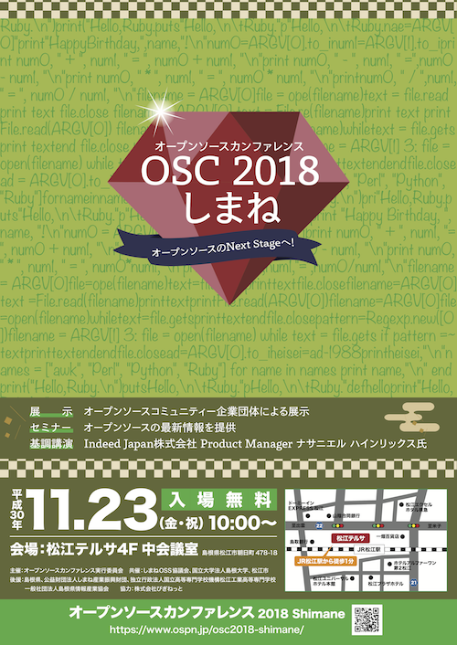

OPEN
SOURCE
SOFTWARE
SOCIETY
SHIMANE


平素は、しまねOSS協議会の活動にご協力いただきありがとうございます。
しまねOSS協議会のメーリングリスト（メールアドレス：os4@3in.ne.jp）を稼働しているサーバに障害が発生し、現在メーリングリストの稼働を停止しております。
利用者の皆様にはご不便をおかけしますが、ご了承いただきますようお願いいたします。
第129回オープンソースサロンを開催します。
オープンソースサロンは参加費無料です。会員以外の方でもご参加いただけます。
事前の申し込みは必要ありません（人数把握のため、下記申し込みサイトから事前登録していただけると助かります）。
当日、会場まで御気軽にお越しください。
サロンの後に懇親会を行います。懇親会に参加をご希望の方は、以下のサイトまたはメールでお申し込みください。
ご来場をお待ちしております。
日時： 2020年3月6日(金) 18時30分～20時00分
会場： 松江オープンソースラボ（松江テルサ別館2階）
| テーマ1 | 島根県産業技術センターの紹介 |
| 発表者1 | 島根県産業技術センター 所長 辰野 恭市 氏 |
| 概 要1 | 島根県産業技術センターは、県内企業の支援のための試験研究機関です。 センターの役割と主な仕事、組織の構成を紹介します。 |
| テーマ2 | ROSを用いた自律走行の取り組み |
| 発表者2 | 島根県産業技術センター 佐々木 友彰 氏 |
| 概 要2 | Robot Operating System (ROS)は、ロボット制御の分野で大変注目されているミドルウェアです。 ロボットのソフトウェア開発を大幅に簡易化します。ROSの概要と注目される理由、 ロボットの自律走行での使用例について紹介します。 |
しまねOSS協議会と松江市は、プログラミング言語Rubyに代表されるオープンソースに関する
広報、啓発活動並びにオープンソースに対する理解を高めるため、
「松江オープンソース活用ビジネスプランコンテスト2020」
を実施いたします。2009年から毎年開催しており、2020年で第12回目の開催となります。
また、2020年2月22日（土）に行われる最終審査会では、2018年学生部門最優秀賞受賞者
佐藤 公治 氏の特別講演を行います。
応募方法等の詳細は以下のページをご覧ください。

第128回オープンソースサロンを開催します。
オープンソースサロンは参加費無料です。会員以外の方でもご参加いただけます。
事前の申し込みも必要ありません。当日会場まで御気軽にお越しください。
サロンの後に懇親会を行います。懇親会に参加をご希望の方は、以下のサイトまたはメールでお申し込みください。
ご来場をお待ちしております。
日時： 2020年1月31日(金) 18時30分～20時00分
会場： 松江オープンソースラボ（松江テルサ別館2階）
| テーマ | 2019年のテックカンファレンスを振り返る |
| 発表者 | 株式会社モンスター・ラボ 羽角 均 氏 |
| 概 要 | RubyKaigiや米国、ポーランドなどのカンファレンスでトーク してきました。感じたこと、見てきたことについてお話します。 |
第127回オープンソースサロンを開催します。
オープンソースサロンは参加費無料です。会員以外の方でもご参加いただけます。
事前の申し込みも必要ありません。当日会場まで御気軽にお越しください。
今回のサロンは、年内最後の開催となりますので、講演後に盛大な忘年会を行います。
忘年会に参加をご希望の方は、以下のサイトまたはメールでお申し込みください。
ご来場をお待ちしております。
日時： 2019年12月17日(火) サロン：18時30分～20時00分
会場： 松江オープンソースラボ（松江テルサ別館2階）
| テーマ1 | 自費出版を支える技術 |
| 発表者1 | エクスウェア株式会社 山折 一平 氏 |
| 概 要1 | 調整中 |
| テーマ2 | プロコン参加報告 |
| 発表者2 | 松江工業高等専門学校 学生数名、杉山 耕一朗 氏 |
| 概 要2 | プロコン課題部門の成果発表 x 2 件 (学生) プロコン準備に企業さんが加わったことの効果 (杉山先生) |
「アイデアをビジネスプランに落とし込むためのワークショップ」を開催します。
毎年開催されているビジネスプランコンテストの様式を使って、
アイディアをビジネスプランにブラシュアップする体験をするワークショップです。
ビジネスプランとして使用するアイディアは、既存のサービスをサンプルとして用いて、
そのサービスが生まれる前の社会情勢や必要性、課題などを考えたうえで、
そのサービスを実現するために必要なオープソースソフトウェアやお金、
収支計画などをチームごとに考えます。
参加をご希望の方は、以下のサイトまたはメールでお申し込みください。
ご参加をお待ちしております。
日時： 2019年12月7日(土) 10時00分～15時00分
会場： 松江オープンソースラボ（松江テルサ別館2階）
主催： 松江オープンソース活用ビジネスプランコンテスト実行委員会
| 日程 | 10:00〜 開会・事務連絡・アイスブレイク 10:10〜 概要説明 10:20〜 ワークショップ 12:00〜 お昼休憩 13:00〜 ワークショップ（続き） 14:00〜 発表 15:00〜 解散 |
| 持参品 | ノートパソコン（持っていない人は会場のPCを貸し出します。） |
| その他 | 現在、企画検討中につき、詳細が決まりましたら後日追記します。 |
今年もRuby市場、ビジネスの拡大を目指して「RubyWorld Conference 2019」を開催いたします。
今回で「RubyWorld Conference」は11回目となります。
しまねOSS協議会は、実行委員会のメンバーならびにGoldスポンサーとして「RubyWorld Conference」の開催を支援しています。
■開 催：2019年11月7日(木)、8日(金)
■会 場：島根県立産業交流会館「くにびきメッセ」
■主 催：RubyWorld Conference開催実行委員会
■基調講演者：
基調講演1：まつもと ゆきひろ 氏 ((一財)Rubyアソシエーション 理事長)
基調講演2：Nadia Odunayo 氏 (The StoryGraph Founder And CEO)
■入場料：5,000円/名
■最新情報はWEBサイトから！
https://2019.rubyworld-conf.org/
「オープンソースカンファレンス 2019 Shimane」を松江で開催します。
| 2019年9月28日（土）10:00〜17:00 | ||
| セミナー会場 | 松江テルサ4F 研修室１ | |
| ワイもく@島根会場・展示ブース | 松江テルサ4F 大会議室 |
2018年の様子
https://www.ospn.jp/press/20181207osc2018-shimane-report.html
2017年の様子
https://www.ospn.jp/press/20171030osc2017-shimane-report.html
松江での開催は、今回で12回目となります。
今年も引き続き地元が主体となり、前回までと同様に以下のような形で開催いたします。
1. セミナーおよび展示の参加が無料！
通常のOSCでは企業の参加には協賛金を頂いておりますが、島根開催は今回も無料で参加可能です。
コミュニティおよび個人の参加はこれまでどおり無料です。
2. セミナー枠の時間が短い！
セミナー1枠の持ち時間は15分とします。
これにより、普段発表の機会が少ない方にもご参加しやすくなっております。
もし、15分以上の時間が欲しい方はお申し込みの際にご相談下さい。
3. 懇親会！
毎年、大変盛り上がる（？！）懇親会を今年も行います。
こちらは定員がありますので、お早めにお申込み下さい。
(只今準備中です。)
4. 申し込み方法
セミナーおよび展示を希望される方は、添付の申込書をしまねOSS協議会事務局までEメールにてご送付願います。
申込書送付先：info@shimane-oss.org
申込書の受付は、【8月30日(金)を締切】とさせていただいていますが、募集枠が埋まり次第受付を終了させていただきますので、お早めにお申し込み下さい。
また、公式サイトにて最新情報を順次公開していきますので、こちらもあわせてご参照下さい。
申込書：オープンソースカンファレンス2019 Shimane 発表・展示申込書(ods)
オープンソースカンファレンス2019 Shimane 発表・展示申込書(xlsx)
公式サイト：https://www.ospn.jp/osc2019-shimane/
5. LIVE配信
当日セミナーの様子をYouTubeで配信します！ご視聴はこちら(終了しました)から
当日は一人でも多くの方がOSSに触れ、交流し、OSSの「今」を感じて頂きたく、皆様お誘いあわせのうえご参加頂けることを願っております。
＊ 詳細な内容につきましては公式Webサイトをご参照頂き、セミナーや展示の内容をご確認下さい。
http://www.ospn.jp/osc2019-shimane/
変更となった日程が決まりました！
第126回オープンソースサロンを開催します。
今回は、しまねOSS協議会年次総会記念講演となります。
オープンソースサロンは参加費無料です。会員以外の方でもご参加いただけます。
事前の申し込みも必要ありません。当日会場まで御気軽にお越しください。
サロンの後に懇親会を行います。懇親会に参加をご希望の方は、以下のサイト
またはメールでお申し込みください。
ご来場をお待ちしております。
日時： 2019年8月5日(月) 18時30分～20時00分
会場： 松江テルサ別館2階 オープンソースラボ
| タイトル | グロービスのデジタルトランスフォーメーションを牽引したRuby活用事例 |
| 講演者 | 株式会社グロービス リードエンジニア 末永 昌也 氏 |
第125回オープンソースサロンを開催します。
オープンソースサロンは参加費無料です。会員以外の方でもご参加いただけます。
事前の申し込みも必要ありません。当日会場まで御気軽にお越しください。
サロンの後に懇親会を行います。懇親会に参加をご希望の方は、以下のサイトまたはメールでお申し込みください。
ご来場をお待ちしております。
日時： 2019年4月8日(月) 18時30分～20時00分
会場： 松江オープンソースラボ（松江テルサ別館2階）
| テーマ1 | なぜ高専か、なぜ松江か ー とある保護者の視点から |
| 発表者1 | windhole／サイボウズ株式会社 風穴 江 氏 |
| テーマ2 | Chainer meetup参加報告とVTuber界隈の近況（地元発表者枠） |
| 発表者2 | フリーランスエンジニア・VTuber 田上 健太 氏 |
第124回オープンソースサロンを開催します。
オープンソースサロンは参加費無料です。会員以外の方でもご参加いただけます。
事前の申し込みも必要ありません。当日会場まで御気軽にお越しください。
サロンの後に懇親会を行います。懇親会に参加をご希望の方は、以下のサイトまたはメールでお申し込みください。
ご来場をお待ちしております。
日時： 2019年3月8日(金) 18時30分～20時00分
会場： 松江オープンソースラボ（松江テルサ別館2階）
| テーマ1 | 飲食店のフードロスを削減する社会派サービス「TABETE」について |
| 発表者1 | 株式会社コークッキング 主任技術者 榊原 徹哉 氏 |
| テーマ2 | 松江オープンソース活用ビジネスプランコンテスト報告 |
| 発表者2-1 | 吉田 利幸 氏 「テストバンク」 |
| 発表者2-2 | ブルーオメガ 「バスココ」 |
しまねOSS協議会と松江市は、プログラミング言語Rubyに代表されるオープンソースに関する
広報、啓発活動並びにオープンソースに対する理解を高めるため、
「松江オープンソース活用ビジネスプランコンテスト2019」
を実施いたします。2009年から毎年開催しており、2019年で第11回目の開催となります。
また、2019年2月23日（土）に行われる最終審査会では、2017年ビジネス活用部門最優秀賞受賞者の
灰示花火カタリスト 中田 光俊 氏の特別講演を行います。
応募方法等の詳細は以下のページをご覧ください。

第123回オープンソースサロンを開催します。
（ワン、ツー、スリー！）
オープンソースサロンは参加費無料です。会員以外の方でもご参加いただけます。
事前の申し込みも必要ありません。当日会場まで御気軽にお越しください。
今回のサロンは、年内最後の開催となりますので、講演後に松江オープンソースラボにて盛大な忘年会を行います。
忘年会に参加をご希望の方は、以下のサイトまたはメールでお申し込みください。
ご来場をお待ちしております。
日時： 2018年12月4日(火) サロン：18時30分～19時30分、忘年会：19時30分〜21時００分
会場： 松江オープンソースラボ（松江テルサ別館2階）
| テーマ | 高専プロコンのご紹介 |
| 発表者 | 松江高専 専攻科2年 川上 直人 氏、3年 鈴木 豪 氏、2年 居田 陸人 氏 |
| 概 要 | 全国の高等専門学校の学生が日々学んだ情報技術をもとに競う、 全国高等専門学校プログラミングコンテスト（通称"高専プロコン"）の紹介と、 今年度松江高専が参加した競技部門についてお話しします。 高専プロコンWebサイト： http://www.procon.gr.jp/ |
「オープンソースカンファレンス 2018 Shimane」を松江で開催します。
| 2018年11月23日（金・祝）10:00〜17:00 | ||
| メイン会場 | 松江テルサ4F 大会議室 （チラシ・ポスターは中会議室ですが、大会議室になりました！） |
|
| 展示ブース | 松江テルサ4F研修室１、松江テルサ別館2F 松江オープンソースラボ （リニューアルしたラボも展示ブースとして使います！） |
|
2017年の様子
https://www.ospn.jp/press/20171030osc2017-shimane-report.html
2016年の様子
https://www.ospn.jp/press/20161013osc2016-shimane-report.html
松江での開催は、今回で11回目となります。
今年も引き続き地元が主体となり、前回までと同様に以下のような形で開催いたします。
1. セミナーおよび展示の参加が無料！
通常のOSCでは企業の参加には協賛金を頂いておりますが、島根開催は今回も無料で参加可能です。
コミュニティおよび個人の参加はこれまでどおり無料です。
2. セミナー枠の時間が短い！
セミナー1枠の持ち時間は15分とします。
これにより、普段発表の機会が少ない方にもご参加しやすくなっております。
もし、15分以上の時間が欲しい方はお申し込みの際にご相談下さい。
3. 懇親会！
毎年、大変盛り上がる（？！）懇親会を今年も行います。
こちらは定員がありますので、お早めにお申込み下さい。
4. 申し込み方法
セミナーおよび展示を希望される方は、添付の申込書をしまねOSS協議会事務局までEメールにてご送付願います。
申込書送付先：info@shimane-oss.org
申込書の受付は、【11月2日(金)を締切】とさせていただいていますが、募集枠が埋まり次第受付を終了させていただきますので、お早めにお申し込み下さい。
また、公式サイトにて最新情報を順次公開していきますので、こちらもあわせてご参照下さい。
申込書：オープンソースカンファレンス2018 Shimane 発表・展示申込書(ods)
オープンソースカンファレンス2018 Shimane 発表・展示申込書(xlsx)
公式サイト：https://www.ospn.jp/osc2018-shimane/
当日は一人でも多くの方がOSSに触れ、交流し、OSSの「今」を感じて頂きたく、皆様お誘いあわせのうえご参加頂けることを願っております。
＊ 詳細な内容につきましては公式Webサイトをご参照頂き、セミナーや展示の内容をご確認下さい。
http://www.ospn.jp/osc2018-shimane/

今年もRuby市場、ビジネスの拡大を目指して「RubyWorld Conference 2018」を開催いたします。
今回で「RubyWorld Conference」は10周年となります。
しまねOSS協議会は、実行委員会のメンバーならびにGoldスポンサーとして「RubyWorld Conference」の開催を支援しています。
■開 催：2018年11月1日(木)、2日(金)
■会 場：島根県立産業交流会館「くにびきメッセ」
■主 催：RubyWorld Conference開催実行委員会
■基調講演者：
基調講演1：まつもと ゆきひろ 氏 ((一財)Rubyアソシエーション 理事長)
基調講演2：Chad Fowler 氏
■入場料：5,000円/名
■最新情報はWEBサイトから！
https://2018.rubyworld-conf.org/
第122回オープンソースサロンを開催します。
今回は、しまねOSS協議会年次総会記念講演となります。
オープンソースサロンは参加費無料です。会員以外の方でもご参加いただけます。
事前の申し込みも必要ありません。当日会場まで御気軽にお越しください。
サロンの後に懇親会を行います。懇親会に参加をご希望の方は、以下のサイト
またはメールでお申し込みください。
ご来場をお待ちしております。
日時： 2018年7月19日(木) 18時30分～20時00分
会場： 松江テルサ４階 中会議室
| タイトル | 第4次産業革命を加速するエコシステム構築の鍵 〜入り乱れしモノリシックとマイクロサービス〜 |
| 講演者 | 株式会社オプティム プラットフォーム事業本部 執行役員 山本 大祐 氏 |
| 概 要 | 少子高齢化、担い手不足が業界問わず叫ばれる課題先進国ニッポン。第4次産 業革命の波を乗りこなすためのテクノロジーについて、オプティムのAI・IoT を活用した農業・医療・建設・小売 等の各事例をもとにお話をすると共に、 その裏側のアーキテクチャに迫ります。 モノリシックとマイクロサービスはパラダイムシフトであるのか、共存の道を 歩むのか、必見です！ |
第121回オープンソースサロンを開催します。
オープンソースサロンは参加費無料です。会員以外の方でもご参加いただけます。
事前の申し込みも必要ありません。当日会場まで御気軽にお越しください。
サロンの後に懇親会を行います。懇親会に参加をご希望の方は、以下のサイト
またはメールでお申し込みください。
ご来場をお待ちしております。
日時： 2018年5月18日(金) 18時30分～20時00分
会場： 松江オープンソースラボ（松江テルサ別館2階）
| テーマ | 固定電話網（PSTN）からIP 網への移行：利用者からみた課題 |
| 発表者 | 駒澤大学名誉教授 福家 秀紀 氏 |
| 概 要 | NTTの固定電話網からIP網への移行計画の概要を紹介した上で、 IT事業者として対応すべき課題について |
第120回オープンソースサロンを開催します。
オープンソースサロンは参加費無料です。会員以外の方でもご参加いただけます。
事前の申し込みも必要ありません。当日会場まで御気軽にお越しください。
サロンの後に懇親会を行います。懇親会に参加をご希望の方は、以下のサイト
またはメールでお申し込みください。
ご来場をお待ちしております。
日時： 2018年4月13日(金) 18時30分～20時00分
会場： 松江オープンソースラボ（松江テルサ別館2階）
| テーマ１ | 「新しい産業集積に関する議論」から見た Ruby City MATSUE プロジェクト |
| 発表者 | 島根大学 人文社会科学研究科 田中 哲也 氏 |
| 概 要 | 島根県松江市はRubyを産業振興の軸に据え情報産業の集積を進めている。 プロジェクトの11年間を「social capital」「embeddedness」アプローチに 着目し考察しましたので報告します。それは有効に作用したのか？その可能性を 探り新しい産業集積に対する未来像を提供する。 資料： 第120回オープンソースサロン報告資料(田中氏) |
| テーマ２ | パソナテック「島根Lab」について |
| 発表者 | 株式会社パソナテック WEBソリューション事業部 島根Lab 田窪 大樹 氏 |
| 概 要 | 創業40年を超える東証一部上場・総合人材サービス会社パソナグループの一員 としてIT領域に特化してHRサービスを展開してきた株式会社パソナテックが、 2017年9月1日に松江市朝日町に「島根Lab」を開設いたしました。エンジニアの 採用・育成による雇用拡大、また産学連携を通じて島根県および松江市の 産業振興を図ることを目的とした”新しい形”の開発拠点です。 島根の皆様へのご挨拶も兼ねて、開設してからこれまで半年間の取り組み について、また、今後の展望についてご紹介いたします。 |
第119回オープンソースサロンを開催します。
オープンソースサロンは参加費無料です。会員以外の方でもご参加いただけます。
事前の申し込みも必要ありません。当日会場まで御気軽にお越しください。
サロンの後に懇親会を行います。懇親会に参加をご希望の方は、以下のサイト
またはメールでお申し込みください。
ご来場をお待ちしております。
日時： 2018年2月21日(水) 18時30分～20時00分
会場： 松江オープンソースラボ（松江テルサ別館2階）
| テーマ | Pepper誕生秘話と最新事例から学ぶロボット革命 |
| 発表者 | ソフトバンクロボティクス株式会社 事業推進本部 事業開発統括部 事業開発部 デベロッパー戦略課 村林 圭子 氏 |
| 概 要 | 今でこそ日常的に見かけるようになったPepperですが、コンセプト作りからハードウェアの細部設計 まで様々な想いが込められており、その想いを実現するために沢山の試行錯誤がありました。 ソフトバンクが懸ける想いをご理解いただくため、その誕生秘話を一部ご紹介します。 私達の挑戦は続いており、決して楽な道のりとは言えません。この数年で私達が 挑んできたチャレンジや、私達と一歩踏み出してくれた企業様の事例をご紹介いたします。 これから待っているロボットと暮らす未来がどんなものか、一緒に考えてみませんか？ |
しまねOSS協議会と松江市は、プログラミング言語Rubyに代表されるオープンソースに関する
広報、啓発活動並びにオープンソースに対する理解を高めるため、
「松江オープンソース活用ビジネスプランコンテスト2018」
を実施いたします。2009年から毎年開催しており、2018年で第10回目の開催となります。
また、2018年2月17日（土）に行われる最終審査会では、第10回記念講演として
Lean Startup Japan LLC 代表社員 和波 俊久 氏の特別講演を行います。
応募方法の詳細は以下のページをご覧ください。

第118回オープンソースサロンを開催します。
オープンソースサロンは参加費無料です。会員以外の方でもご参加いただけます。
事前の申し込みも必要ありません。当日会場まで御気軽にお越しください。
サロンの後に懇親会を行います。懇親会に参加をご希望の方は、以下のサイト
またはメールでお申し込みください。
ご来場をお待ちしております。
日時： 2018年2月9日(金) 18時30分～20時00分
会場： 松江オープンソースラボ（松江テルサ別館2階）
| テーマ１ | 高専プロコン・競技部門 |
| 発表者 | 松江高専 2年生 鈴木 豪 氏 松江高専 3年生 北村 将騎 氏 松江高専 専攻科1年生 川上 直人 氏 |
| 概 要 | 松江高専のプロコン活動と競技部門の作品を紹介します。 |
| テーマ２ | Rubyの1/4世紀・年表版 |
| 発表者 | 日本Rubyの会 高橋 征義 氏 |
| 概 要 | Rubyの25周年を記録するために私家版の年表を作成したので、 それを見ながらRubyの25年のあゆみを振り返ってみます。 （Rubyの25周年イベントでも同タイトルで講演する予定ですが、 内容は異なる予定です。） |
第117回オープンソースサロンを開催します。
オープンソースサロンは参加費無料です。会員以外の方でもご参加いただけます。
事前の申し込みも必要ありません。当日会場まで御気軽にお越しください。
サロンの後に懇親会を行います。懇親会に参加をご希望の方は、以下のサイト
またはメールでお申し込みください。
ご来場をお待ちしております。
日時： 2018年1月19日(金) 18時30分～20時00分
会場： 松江オープンソースラボ（松江テルサ別館2階）
| テーマ１ | 高専プロコン・COLORS |
| 発表者 | 松江高専 4年生 土井 一磨 氏 |
| 概 要 | 松江高専のプロコン活動と課題部門「COLORS」について紹介します。 |
| テーマ２ | 富士通のOSSとLinux Foundationの取り組み |
| 発表者 | 富士通株式会社 Linux開発統括部 部長 江藤 圭也 氏 |
| 概 要 | Linuxから始まるOSSの広がりに積極的に関わりその中心的な役割を果たしている 富士通の取組について、富士通のLinux開発を統括し、Linux Foundationにおいて ボードのバイスチェアを務める江藤圭也さんにお話しいただきます。 |
第116回オープンソースサロンを開催します。
オープンソースサロンは参加費無料です。会員以外の方でもご参加いただけます。
今回のサロンは、年内最後の開催となりますので、松江オープンソースラボではなく、
一畑百貨店松江店内の「イチバタダイニング」で開催します。
（お越しの際はご注意ください。）
また、サロンの後には盛大な忘年会を行います。
サロンのみの参加申し込みは、必ずしも必要ありませんが、できましたら、
以下のサイトからお申し込みください。
忘年会にご参加の方は、できるだけ事前申し込みをお願いします。
ご来場をお待ちしております。
日時： 2017年12月8日(金)、講演：18時30分～19時30分、忘年会：19時30分～21時00分
会場： イチバタダイニング（一畑百貨店松江店内）
| タイトル | Debian Updates |
| 発表者 | 京都大学大学院理学研究科 数学教室 助教 Debian JP Project 副会長／関西 Debian 勉強会 佐々木 洋平 氏 |
| 概 要 | 今年6月にリリースされたDebian 9 "Stretch"の話題を中心に、 「そもそもDebianとは何か」から始めて、最近Debian Projectの話題を 紹介します。仕事でDebian(およびその派生物であるUbuntuやRaspbian等) を利用されている方や、これから使ってみようと考えている方に、 その利点や魅力をお伝えします. |
今年もRuby市場、ビジネスの拡大を目指して「RubyWorld Conference 2017」を開催いたします。
しまねOSS協議会は実行委員会のメンバーならびにGoldスポンサーとして、「RubyWorld Conference」の開催を支援しています。
■開 催：2017年11月1日(水)、2日(木)
■会 場：島根県立産業交流会館「くにびきメッセ」
■主 催：RubyWorld Conference開催実行委員会
■テーマ：Rubyの「エコシステム」～Rubyの持続可能な生態系～
■基調講演者：
基調講演1：まつもと ゆきひろ 氏 ((一財)Rubyアソシエーション 理事長)
基調講演2：角谷 信太郎 氏 ((一社)日本Rubyの会 理事)
■入場料：5,000円/名
■最新情報はWEBサイトから！
http://2017.rubyworld-conf.org/ja/
「オープンソースカンファレンス2017 Shimane」を松江で開催します。
| 2017年10月14日（土）10:00〜17:00 | |
| 松江テルサ1Fテルサホール |
2016年の様子
https://www.ospn.jp/press/20161013osc2016-shimane-report.html
2015年の様子
https://www.ospn.jp/press/20150908osc2015-shimane-report.html
松江での開催は、今回で10回目となります。
10回目の記念として、第1回目の開催で利用したテルサホールに場所を移し、より多くの方が来られても大丈夫なように準備をしております。
今年も引き続き地元が主体となり、前回までと同様に以下のような形で開催いたします。
1. セミナーおよび展示の参加が無料！
通常のOSCでは企業の参加には協賛金を頂いておりますが、島根開催は今回も無料で参加可能です。
コミュニティおよび個人の参加はこれまでどおり無料です。
2. セミナー枠の時間が短い！
セミナー1枠の持ち時間は15分とします。
これにより、普段発表の機会が少ない方にもご参加しやすくなっております。
もし、15分以上の時間が欲しい方はお申し込みの際にご相談下さい。
3. 懇親会！
毎年、大変盛り上がる（？！）懇親会を今年も行います。
こちらは定員がありますので、お早めにお申込み下さい。
(只今準備中です。)
4. 申し込み方法
セミナーおよび展示を希望される方は、添付の申込書をしまねOSS協議会事務局までEメールにてご送付願います。
申込書送付先：
申込書の受付は、【9月15日(金)を締切】とさせていただいていますが、募集枠が埋まり次第受付を終了させていただきますので、お早めにお申し込み下さい。
また、公式サイトにて最新情報を順次公開していきますので、こちらもあわせてご参照下さい。
申込書：オープンソースカンファレンス2017 Shimane 発表・展示申込書(ods)
オープンソースカンファレンス2017 Shimane 発表・展示申込書(xlsx)
公式サイト：https://www.ospn.jp/osc2017-shimane/
当日は一人でも多くの方がOSSに触れ、交流し、OSSの「今」を感じて頂きたく、皆様お誘いあわせのうえご参加頂けることを願っております。
＊ 詳細な内容につきましては公式Webサイトをご参照頂き、セミナーや展示の内容をご確認下さい。
http://www.ospn.jp/osc2017-shimane/
第115回オープンソースサロンを開催します。
オープンソースサロンは参加費無料です。会員以外の方でもご参加いただけます。
事前の申し込みも必要ありません。当日会場まで御気軽にお越しください。
サロンの後に懇親会を行います。懇親会に参加をご希望の方は、以下のサイト
またはメールでお申し込みください。
ご来場をお待ちしております。
日時： 2017年9月8日(金) 18時30分～20時00分
会場： 松江オープンソースラボ（松江テルサ別館2階）
| タイトル | 過去の経験をもとにした営業の考え方 |
| 発表者 | 有限会社パリティクラブ 瀧尻 雄也 氏 |
| 概 要 | いくつかの業種（旅行会社、印刷デザイン会社）にて14年間の営業担当をし、 これらの経験から得た営業の考え方についてお話頂きます。エンジニアの多く は長い時間を機器と過ごしますが、営業は長い時間を人との出会いの中で過ごす ため仕事のしかたが大きく異なります。役割の異なる営業の考え方を知ることで、 新しい気づきが得られることと思います。 |
第114回オープンソースサロンを開催します。
今回は、しまねOSS協議会年次総会記念講演となります。
オープンソースサロンは参加費無料です。会員以外の方でもご参加いただけます。
事前の申し込みも必要ありません。当日会場まで御気軽にお越しください。
サロンの後に懇親会を行います。懇親会に参加をご希望の方は、以下のサイト
またはメールでお申し込みください。
ご来場をお待ちしております。
日時： 2017年7月21日(金) 18時30分～20時00分
会場： 松江テルサ４階 大会議室
| 講演１ | |
| タイトル | オープンソースのアニメーション制作ソフト「OpenToonz」のご紹介 |
| 講演者 | 株式会社ドワンゴ 技術コミュニケーション室 映像制作推進グループ 岩澤 駿 氏 |
| 概 要 | OpenToonzは、2016年3月に公開されたオープンソースのアニメーション制作ソフトウェアです。 スタジオジブリが「もののけ姫」以降のデジタル制作に用いてきた商用ソフトウェア「Toonz」が ベースとなっています。本講演では、ドワンゴがOpenToonzを公開するに至った経緯と、公開から 現在までの国内外のユーザーの反応、１年余りのオープンソース運営で感じたこと、今後の展望など についてお話しします。 OpenToonzウェブサイト : http://opentoonz.github.io/ ドワンゴのOSSリポジトリ一覧 : https://dwango.github.io/ |
| 講演２ | |
| タイトル | OpenToonzの導入事例：映画「メアリと魔女の花」メイキング |
| 講演者 | 株式会社スタジオポノック 奥井 敦 氏 |
| 概 要 | 7月8日（土）に全国公開されるアニメーション映画「メアリと魔女の花」は、元スタジオジブリの 米林監督と西村プロデューサーとが新たに立ち上げた「スタジオポノック」の第一回長編作品です。 本作では、色彩設計の一部と、撮影素材（シャボン玉の虹色素材）の作成にOpenToonzが使用され ました。本講演では、OpenToonzのシャボン玉エフェクトの例を挙げて、実際の制作データをお見せ しながら、制作現場と開発の舞台裏をご紹介します。 「メアリと魔女の花」ウェブサイト : http://www.maryflower.jp |
講演の映像 : https://youtu.be/XMQIVw-Dt00
第113回オープンソースサロンを開催します。
オープンソースサロンは参加費無料です。会員以外の方でもご参加いただけます。
事前の申し込みも必要ありません。当日会場まで御気軽にお越しください。
サロンの後に懇親会を行います。懇親会に参加をご希望の方は、以下のサイト
またはメールでお申し込みください。
ご来場をお待ちしております。
日時： 2017年6月9日(金) 18時30分～20時00分
会場： 松江オープンソースラボ（松江テルサ別館2階）
| タイトル | GPU 活用技術最前線 – HPC / Deep Learning / VDI |
| 発表者 | エヌビディア合同会社 エンタプライズ事業部 佐々木 邦暢 氏 / 田上 英昭 氏 |
| 概 要 | 3Dゲームの華麗なグラフィックを高速に描画するデバイスとして発展したGPU。 しかし、その能力をグラフィック以外の領域でも活用する「GPUコンピューティング」 もすでに10年以上の歴史を持ち、「汎用的なアクセラレータ」としての位置づけが 定着しているといえるでしょう。 このセッションでは、数多くのスーパーコンピューターを含むHPC、高度なCAD ワークステーションも実現可能なVDI (NVIDIA GRID)、そしてここ数年非常な 盛り上がりを見せているAI/機械学習(特にディープラーニング)など、GPU活用の 最新情報を幅広くお伝えします。 |
第112回オープンソースサロンを開催します。
オープンソースサロンは参加費無料です。会員以外の方でもご参加いただけます。
事前の申し込みも必要ありません。当日会場まで御気軽にお越しください。
サロンの後に懇親会を行います。懇親会に参加をご希望の方は、以下のサイト
またはメールでお申し込みください。
ご来場をお待ちしております。
日時： 2017年5月26日(金) 18時30分～20時00分
会場： 松江オープンソースラボ（松江テルサ別館2階）
| 発表タイトル | ITと人型ロボットPepperによる認知症状リハビリテーション支援事業 |
| 発表者 | エクスウェア株式会社 島根支社 真法 哲也 氏 |
| 発表概要 | 「平成28年度 島根発ヘルスケアビジネス先進モデル構築支援事業」 で採択された上記発表タイトルにある事業について、県の報告会で 発表した内容をご説明いたします。概要は、人型ロボットを利用した 高次脳機能障害の方々へのケアについて、その事業化案と実証結果 についてとなります。 |
第111回オープンソースサロンを開催します。
オープンソースサロンは参加費無料です。会員以外の方でもご参加いただけます。
事前の申し込みも必要ありません。当日会場まで御気軽にお越しください。
サロンの後に懇親会を行います。懇親会に参加をご希望の方は、以下のサイト
またはメールでお申し込みください。
ご来場をお待ちしております。
日時： 2017年4月21日(金) 18時30分～20時00分
会場： 松江オープンソースラボ（松江テルサ別館2階）
| テーマ1 | 学生からみた松江高専生とOpenStackで遊んだお話 |
| 講演者 | 松江高専 専攻科 小松 享 氏 |
| テーマ2 | 「参加型デザイン（共創）」による社会価値創造の現場レポート |
| 講演者 | ＮＥＣソリューションイノベータ株式会社 イノベーション戦略本部 地方創生事業推進室 石崎 浩太郎 氏 |
| 概 要 | 多くのモノがインターネットに繋がるようになったIoTの状況下において、 様々な産業分野や、地域課題解決の現場において、多様かつ刻々と変化する ユーザ・地域住民の潜在的ニーズへいち早く訴えかける、サービス創出や取組みが 必要とされてます。 不確実、不明確な課題に対し、様々なメンバが協働で取り組む手法である 「参加型デザイン（共創）」による取組み事例を紹介させていただきます。 幾つかの地域や事業での、新サービス創出やオープンデータ利活用による 社会価値創造について、現場の生の声をお話させていただきます。 |
第110回オープンソースサロンを開催します。
オープンソースサロンは参加費無料です。会員以外の方でもご参加いただけます。
事前の申し込みも必要ありません。当日会場まで御気軽にお越しください。
サロンの後に懇親会を行います。懇親会に参加をご希望の方は、以下のサイト
またはメールでお申し込みください。
ご来場をお待ちしております。
日時： 2017年1月20日(金) 18時30分～20時00分
会場： 松江オープンソースラボ（松江テルサ別館2階）
| テーマ１ | 「誰でもできるVRコンテンツ制作」 |
| 講演者 | 島根大学ものづくり部 今井 勇樹 氏 |
| テーマ２ | インド・ケララ州のIT企業様による企業紹介(仮) |
| 講演者 | ６名(調整中) |
しまねOSS協議会と松江市は、プログラミング言語Rubyに代表されるオープンソースに関する
広報、啓発活動並びにオープンソースに対する理解を高めるため、
「松江オープンソース活用ビジネスプランコンテスト２０１７」
を実施いたします。２００９年から毎年開催しており、２０１７年で第９回目の開催となります。
応募方法の詳細は以下のページをご覧ください。

第109回オープンソースサロンを開催します。
2006年9月3日に発足した当協議会も、今年１０周年を迎えることができました。
今回のサロンは、１０周年を記念して、「【10周年記念】大忘年会」として開催いたします。
いつもはオープンソースラボで開催しておりますが今回はホンソゴで開催いたします。
当協議会の会員でなくてもご参加いただけます。
参加を希望される方は以下の申し込みサイトからお申し込みください。
日時：平成２８年１２月９日（金）１８：３０〜２０：００
場所：カフェ・ダイニングバー ホンソゴ（島根県松江市寺町200）
参加費：一般４，０００円、学生２，０００円
参加申し込み： https://connpass.com/event/44969/
【会員の皆様へ】
当協議会の会員の皆様に、自由に PR していただく時間をご用意いたします。PRしていただく内容はなんでも結構です。自社製品やサービス、求人や求職に関すること、研究内容、活動内容など、制限はありません。PR 時間は5分間の予定です。PCの持ち込み可能です。
PRを希望される方は、以下の項目をメールで info@shimane-oss.org 宛にお送りください。
・会員種別（法人・個人・サポーター）
・名称（法人であれば組織名称、個人・サポーターの方はお名前）
・本件担当者の方のお名前
・本件担当者の方のメールアドレス
・当日PRされる方のお名前（ふりがな）
【PRタイム】
・株式会社ティーエム21様
・きむらしのぶ様
・佐藤文昭様
・ファーエンドテクノロジー株式会社様
・株式会社ネットワーク応用通信研究所様
第108回オープンソースサロンを開催します。
オープンソースサロンは参加費無料です。会員以外の方でもご参加いただけます。
事前の申し込みも必要ありません。当日会場まで御気軽にお越しください。
ご来場をお待ちしております。
日時： 2016年11月11日(金) 18時30分～20時00分
会場： 松江オープンソースラボ（松江テルサ別館2階）
【第１部】
| テーマ | フランジア松江オフィス「FraFab」と 新たなコミュニティ「ドローンナイト」の紹介 |
| 講演者 | 株式会社フランジア・ジャパン 林田 賢行氏 ドローンナイト 石倉 淳一氏、吉岡 隆行氏 |
【第２部】
| テーマ | IoT通信プラットフォーム「SORACOM」 |
| 講演者 | 株式会社ソラコム シニアエンジニア 松井 基勝氏 |
| 概 要 | IoT通信プラットフォーム「SORACOM」は、IoT(Internet of Things)に必要な通信を 誰でも簡単にご利用いただけます。 専門分野の集合体であるIoTの構成に欠かせないプログラマブルな通信の仕組みと、 様々な領域のIoT事例をご紹介します。 |
第107回オープンソースサロンを開催します。
オープンソースサロンは参加費無料です。会員以外の方でもご参加いただけます。
事前の申し込みも必要ありません。当日会場まで御気軽にお越しください。
ご来場をお待ちしております。
日時： 2016年10月28日(金) 18時30分～20時00分
会場： 松江オープンソースラボ（松江テルサ別館2階）
【講演１（地元発表）】
| タイトル | 最近流行りの機械学習を紹介してみる |
| 講演者 | システムアトリエブルーオメガ きむら しのぶ氏 |
【講演２】
| テーマ | アイデアソン手法に学ぶ地域での価値づくり（仮） |
| 講演者 | 富士通総研 佐々木 哲也氏、黒木 昭博氏 |
「オープンソースカンファレンス2016 Shimane」を松江で開催します。
| 2016年9月24日（土）10:00〜17:00 | |
| 松江テルサ４階大会議室および松江テルサ別館オープンソースラボ |
2015年の様子
http://www.ospn.jp/press/20150908osc2015-shimane-report.html
2014年の様子
http://www.ospn.jp/press/20140911osc2014-shimane-report.html
松江での開催は、今回で9回目となります。
2012年より地元が主体的に企画運営を行っております。今年も引き続き地元が主体となり、前回までと同様に以下のような形で開催いたします。
1. セミナーおよび展示の参加が無料！
通常のOSCでは企業の参加には協賛金を頂いておりますが、島根開催は今回も無料で参加可能です。
コミュニティおよび個人の参加はこれまでどおり無料です。
2. セミナー枠の時間が短い！
セミナー1枠の持ち時間は15分とします。
これにより、普段発表の機会が少ない方にもご参加しやすくなっております。
もし、15分以上の時間が欲しい方はお申し込みの際にご相談下さい。
3. 懇親会！
毎年、大変盛り上がる（？！）懇親会を今年も行います。
こちらは定員がありますので、お早めにお申込み下さい。
(只今準備中です。)
4. 申し込み方法
セミナーおよび展示を希望される方は、添付の申込書をしまねOSS協議会事務局までEメールにてご送付願います。
申込書の受付は、【8月19日(金)を締切】とさせていただいていますが、募集枠が埋まり次第受付を終了させていただきますので、お早めにお申し込み下さい。
また、公式サイトにて最新情報を順次公開していきますので、こちらもあわせてご参照下さい。
申込書：オープンソースカンファレンス2016 Shimane 発表・展示申込書(ods)
オープンソースカンファレンス2016 Shimane 発表・展示申込書(xlsx)
公式サイト：https://www.ospn.jp/osc2016-shimane/
当日は一人でも多くの方がOSSに触れ、交流し、OSSの「今」を感じて頂きたく、皆様お誘いあわせのうえご参加頂けることを願っております。
＊ 詳細な内容につきましては公式Webサイトをご参照頂き、セミナーや展示の内容をご確認下さい。
http://www.ospn.jp/osc2016-shimane/
今年もRuby市場、ビジネスの拡大を目指して「RubyWorld Conference 2016」を開催いたします。
しまねOSS協議会は実行委員会のメンバーならびにGoldスポンサーとして、「RubyWorld Conference」の開催を支援しています。
■開 催：2016年11月3日(木)、4日(金)
■会 場：島根県立産業交流会館「くにびきメッセ」
■主 催：RubyWorld Conference開催実行委員会
■テーマ：Rubyの「エコシステム」～Rubyの持続可能な生態系～
■基調講演者：
基調講演1：まつもとゆきひろ氏 ((一財)Rubyアソシエーション理事長)
基調講演2：堀江大輔氏、Edward Thomson氏 (GitHub Inc.)
■入場料：5,000円/名
■最新情報はWEBサイトから！
http://2016.rubyworld-conf.org/ja/
Fluentd の紹介や解説、事例発表などを行う Fluentd meetup が松江オープンソースラボで開催されます。
しまねOSS協議会は共催としてお手伝いをさせていただくことになりました。
興味のある方はぜひ以下の参加申し込みサイトからお申し込みください。
「発表したい!」という方も大歓迎です!
お問い合わせは参加申し込みサイトまたはしまねOSS協議会事務局までご連絡ください。
参加申し込みサイト→ Fluentd meetup in Matsue – dots. [ドッツ]
日時： 2016年7月30日(土) 13時00分～16時00分
会場： 松江オープンソースラボ（松江テルサ別館2階）
主催： Fluentd Community
共催： しまねOSS協議会
第106回オープンソースサロンを開催します。
今回は、しまねOSS協議会年次総会記念講演となります。
オープンソースサロンは参加費無料です。会員以外の方でもご参加いただけます。
事前の申し込みも必要ありません。当日会場まで御気軽にお越しください。
ご来場をお待ちしております。
日時： 2016年7月29日(金） 18時30分～20時00分
会場： 松江オープンソースラボ（松江テルサ別館2階）
| テーマ | OSS、分散システム、クラウドサービス |
| 講演者 | トレジャーデータ株式会社 田籠聡 氏 |
| プロフィール | 2010年ライブドア(現LINE)入社、2015年トレジャーデータ株式会社入社。 Webサービスの開発・運用改善やデータ分析基盤の構築などの傍らで各種OSSの開発に参加。 Fluentd、MessagePack-Ruby、Norikra等のプロジェクトのコミッタ、メンテナ。 RubyKaigiをはじめとした多くのカンファレンスで発表。 第9回日本OSS奨励賞受賞。 |
| 概要 | インターネットが当たり前のものとなりあらゆる場所やデバイスで高機能なソフトウェアが実行されるようになった近年、 コンピュータ技術の進化は従来の巨大企業ではなく、インターネットを主戦場としたクラウドサービス企業により牽引されることが多くなってきました。 分散処理などのこの傾向が強い技術の中心にOSSがあることはもはや疑いようはなく、またその開発への開発者の参加が、 実際には企業としてというより、各社に籍を置く個人としてであることも珍しくはありません。 この講演では、クラウドサービスを提供する企業としてトレジャーデータ株式会社を例にとり、 その分散システムやエコシステムがOSSを中心としてどのように組み上げられているのかについて、 あるいはそういった企業はプログラマにとってどのように魅力的でエキサイティングなのかについて個人的な経験も交えて紹介し、 プログラマと企業そしてOSSの関係について探ります。 |
第105回オープンソースサロンを開催します。
【開催日が7月1日から7月15日に変更になりました】
オープンソースサロンは参加費無料です。会員以外の方でもご参加いただけます。
事前の申し込みも必要ありません。当日会場まで御気軽にお越しください。
ご来場をお待ちしております。
日時： 2016年7月15日(金) 18時30分～20時00分
会場： 松江オープンソースラボ（松江テルサ別館2階）
| テーマ | 人間の最大欲求を支援する！ 〜不動の人とコミュニケーション技術〜 |
| 講演者 | 伊藤史人氏（島根大学総合理工学研究科） ほか |
| 概要 | 人間にとって最大の欲求とは何でしょうか？ もちろん、生理的欲求は生存のために最低限必要なものですが、 「人」として生きるにはコミュニケーションが欠かせません。 それを証明するように、全身が動かなくなる病気、 ALS患者の多くは最大の希望として「話すこと」を望みます。 逆に話せなくなることを恐れて生きることを諦める人もいるのです。 健常者にとって当たり前のコミュニケーション。 本講演では、自律的な動きを奪われたALS患者を通して人間の最大欲求を考察し、 コミュニケーションを支援するテクノロジーについてお話します。 |
第104回オープンソースサロンを開催します。
オープンソースサロンは参加費無料です。会員以外の方でもご参加いただけます。
事前の申し込みも必要ありません。当日会場まで御気軽にお越しください。
ご来場をお待ちしております。
日時： 2016年7月8日(金) 18時30分～20時00分
会場： 松江オープンソースラボ（松江テルサ別館2階）
| テーマ | 『ルビィのぼうけん こんにちは！プログラミング』翻訳出版記念トークセッション |
| 講演者 | 鳥井 雪 氏（Rails Girls Tokyoコーチおよびオーガナイザー） 槇原 綾子 氏、松岡 香里 氏（Rails Girls Matsue） |
| 概要 | プログラミングを子どもたちが身近に感じ、楽しく学ぶために書かれた絵本 『ルビィのぼうけん こんにちは！プログラミング』（原題：Hello Ruby） の翻訳出版を記念して、翻訳者であり、また著者のリンダ・リウカスさんが 創始者の一員であるRails Girlsを2013年に東京で開催し、 その後の日本での開催をサポートしている鳥井雪さんをお招きし、 Rails Girls Matsueのメンバー槇原綾子さん、松岡 香里さんにもご参加いただき、 ルビィのぼうけんとプログラミングの楽しさをお話ししていただきます。 |
第103回オープンソースサロンを開催します。
オープンソースサロンは参加費無料です。会員以外の方でもご参加いただけます。
事前の申し込みも必要ありません。当日会場まで御気軽にお越しください。
ご来場をお待ちしております。
日時： 2016年6月17日(金) 18時30分～20時00分
会場： 松江オープンソースラボ（松江テルサ別館2階）
| テーマ | 「発達障がいとICT」 ー支援から就労まで？ー |
| 講演者 | 縄手雅彦氏（島根大学大学院総合理工学研究科） |
| 概要 | ICTを用いた発達障がい支援は様々な方面から期待を持たれている． 我々は主として学習障がい児の学習支援のためのアプリ開発を行っているが， 教育や療育の関係者はICTの知識は最近持てているものの， 自分たちの手法がアプリになるという発想が無いために，ただのユーザーとなっており， 独自の支援技術を持っていながらも，広範囲な展開は期待できない． この度，言語学や医療関係者と共同で開発した音読・音韻検査や学校教員と共同開発した特殊音節学習アプリは， 大学の情報関係研究者と教育関係者の連携の新しい試みであり， このような形態の連携が今後ますます重要になると思われる． 今回は，開発したアプリについて紹介すると共に， 少子化の時代を迎え通常形態の就労が困難な発達障害児・者の進路選択としてのICT業界， という観点からも議論を行いたい． |
第102回オープンソースサロンを開催します。
オープンソースサロンは参加費無料です。会員以外の方でもご参加いただけます。
事前の申し込みも必要ありません。当日会場まで御気軽にお越しください。
ご来場をお待ちしております。
日時： 2016年3月9日(水) 18時30分～20時00分
会場： 松江オープンソースラボ（松江テルサ別館2階）
| テーマ | 情報サービス産業の集積-Rubyの可能性 |
| 講演者 | 谷花 佳介 助教（大阪経済法科大学経済学部） |
| 概 要 | バブル経済後の我が国経済においては、 他産業の停滞を尻目に情報産業は成長を続けている。 そのため、情報産業は地域経済発展の起爆剤としての役割を期待されているが、 極度な東京圏集中が現実である。 そもそも、情報産業の集積の背景にはいかなる要因があるのか？ 島根県、中国地方はRubyを産業振興の軸に据え、 情報産業の集積を図ろうとしているが、 それは有効に作用しているのか？その可能性を探り、地域経済振興策に対する判断材料を提供する。 |
第101回オープンソースサロンを開催します。
オープンソースサロンは参加費無料です。会員以外の方でもご参加いただけます。
事前の申し込みも必要ありません。当日会場まで御気軽にお越しください。
ご来場をお待ちしております。
日時： 2016年3月3日(木) 18時30分～20時00分
会場： 松江オープンソースラボ（松江テルサ別館2階）
| テーマ | Rails Girls Matsue 2nd 開催報告 |
| 講演者 | 松岡 香里 氏（Rails Girls Matsue 2nd コーチ）ほか |
しまね OSS 協議会と松江市は、プログラミング言語 Ruby に代表されるオープンソースに関する
広報、啓発活動並びにオープンソースに対する理解を高めるため、
「松江オープンソース活用ビジネスプランコンテスト２０１６」
を実施いたします。２００９年から毎年開催しており、２０１６年で第８回目の開催となります。
応募方法の詳細は以下のページをご覧ください。

しまねOSS協議会は2006年9月3日に設立され、第10期目に入っております。
2006年10月から始まったオープンソースサロンも、回を重ねて第100回を迎えることになりました。
そこで、第100回を記念してパーティーを開催いたします。
会員の方だけでなく、会員以外の方にもご参加いただき、昔話や未来の話をしながら交流を深めていただければと思います。
日時： 2015年12月4日(金) 18時30分～20時30分
会場： スサノオカフェ（島根県松江市寺町200 スサノオビル１階）http://www.susanoo-cafe.com/
会費： 一般 4,000円
学生 2,000円
【参加申込方法】
1. Doorkeeper
https://os4openoffice.doorkeeper.jp/events/35313
2. メール または FAX
◯必要事項
・氏名
・所属
・一般 または 学生
・連絡先メールアドレス または 電話番号
◯宛先
メール office@shimane-oss.org
FAX 0852-28-9398
【会員の皆様】
会員の皆様に、PR・発表の時間を設けております。希望される方は申込の際にその旨をお書き添えください。
当日でも受け付けますのでぜひご利用ください。
第99回オープンソースサロンを開催します。
オープンソースサロンは参加費無料です。会員以外の方でもご参加いただけます。
事前の申し込みも必要ありません。当日会場まで御気軽にお越しください。
ご来場をお待ちしております。
日時： 2015年11月20日(金) 18時30分～20時00分
会場： 松江オープンソースラボ（松江テルサ別館2階）
| テーマ | 日本におけるOSSの（黒？）歴史 |
| 講演者 | 中央大学文学部 教授 飯尾 淳 氏 |
今年もRuby市場、ビジネスの拡大を目指して「RubyWorld Conference 2015」を開催いたします。
しまねOSS協議会は実行委員会のメンバーならびにGoldスポンサーとして、「RubyWorld Conference」の開催を支援しています。
■開 催：2015年11月12日(木)、13日(金)
■会 場：島根県立産業交流会館「くにびきメッセ」
■主 催：RubyWorld Conference開催実行委員会
■テーマ：Rubyの多様性
■基調講演者：
基調講演1：まつもとゆきひろ ((一財)Rubyアソシエーション理事長)
基調講演2：Linda Liukas氏 (「Rails Girls」創設者)
■入場料：5,000円/名
■最新情報はWEBサイトから！
http://www.rubyworld-conf.org/ja/
第98回オープンソースサロンを開催します。
オープンソースサロンは参加費無料です。会員以外の方でもご参加いただけます。
事前の申し込みも必要ありません。当日会場まで御気軽にお越しください。
ご来場をお待ちしております。
日時： 2015年10月28日(水) 18時30分～20時00分
会場： 松江オープンソースラボ（松江テルサ別館2階）
| テーマ | はじめまして、松江ラボです |
| 講演者 | ミラクル・リナックス株式会社 松江ラボ 押田 光雄 氏 (所長)、藤原 慎太郎 氏、中村 矩揮 氏 |
| 概 要 | 10月15日にテクノアークしまね にオープンしたミラクル・リナックス株式会社 の松江ラボのこれからの取組み及び目標についてお話しします。 あわせて、ラボのメンバーの自己紹介を行います。よろしくおねがいします。 |
島根大学ではオープンデータを活用した経済効果に関する研究を進めています。
オープンデータを活用した地域での事例は日本ではまだ少ないと言われていますが、
横浜市では全国に先駆けてオープンデータの活用が広がっており、若者の力で
横浜市の課題の見える化や解決に向けたアプリケーションの開発など行う
アイデアソン、ハッカソンが開催されています。
今回は横浜市の取組を推進されている担当者をお招きしてセミナーを開催いたします。
http://www.shimane-u.ac.jp/docs/2015090700011/
■日時・場所
・日時：平成２７年１０月９日（金）午後６時～午後８時
・場所： 島根大学法文学部 ２階 多目的室１（207室）
■講演
「オープン・イノベーション 横浜の挑戦！」
講師： 長谷川 孝 氏（横浜市政策局政策調整担当理事）
「温もりのあるＩＣＴ活用を目指して 金沢区の挑戦！」
講師： 石塚 清香 氏（横浜市金沢区地域振興課）
■主催：島根大学（Ruby・OSSプロジェクトセンター）
共催：松江市（予定）、しまねOSS協議会（予定）
※参加無料・参加を希望される方は下記お問合せ先までご連絡をお願いいたします。
●お問合せ先 野田哲夫 TEL&FAX 0852-32-6164 e-Mail: nodat@soc.shimane-u.ac.jp
第97回オープンソースサロンを開催します。
オープンソースサロンは参加費無料です。会員以外の方でもご参加いただけます。
事前の申し込みも必要ありません。当日会場まで御気軽にお越しください。
ご来場をお待ちしております。
日時： 2015年9月14日(月) 18時30分～20時00分
会場： 松江オープンソースラボ（松江テルサ別館2階）
| テーマ | スマートフォンを活用したバリアフリーマップの提案 |
| 講演者 | 島根大学総合理工学研究科・助教／b-Freeプロジェクト・CTO 伊藤 史人 氏 |
| 概 要 | 遠位型ミオパチー患者会NPO法人PADMは、Googleインパクトチャレンジ※にて 「みんなでつくるバリアフリーマップ」を提案し、グランプリを受賞しました。 本提案は、スマホ等から得られる車いすの走行実績（A-GPS）や路面の凹凸 （加速度）をはじめ、全方位カメラや3Dセンサによる情報をバリア／バリアフリー 情報として共有する仕組みを基本としています。現在、α版を開発中ですが、 先進的機能の一部については協力者を探しています。ぜひ一緒に作ってみませんか？ ※Googleインパクトチャレンジは、Google.org が「テクノロジーで世界を よくするスピードをあげよう」をコンセプトとしたコンペティションです。 |
「オープンソースカンファレンス2015 Shimane」を松江で開催します。
| ２０１５年８月２２日（土）10:00〜17:00 | |
| 松江テルサ４階 中会議室および研修室１ |
2014年の様子
http://www.ospn.jp/press/20140911osc2014-shimane-report.html
2013年の様子
http://www.ospn.jp/press/20130913osc2013-shimane-report.html
松江での開催は、今回で8回目となります。
2012年より地元が主体的に企画運営を行っております。今年も引き続き地元が主体となり、前回までと同様に以下のような形で開催いたします。
1. セミナーおよび展示の参加が無料！
通常のOSCでは企業の参加には協賛金を頂いておりますが、島根開催は今回も無料で参加可能です。
コミュニティおよび個人の参加はこれまでどおり無料です。
2. セミナー枠の時間が短い！
セミナー1枠の持ち時間は15分とします。
これにより、普段発表の機会が少ない方にもご参加しやすくなっております。
もし、15分以上の時間が欲しい方はお申し込みの際にご相談下さい。
3. 懇親会！
毎年、大変盛り上がる（？！）懇親会を今年も行います。
こちらは定員がありますので、お早めにお申込み下さい。
お申込みははこちら。
4. 申し込み方法
セミナーおよび展示を希望される方は、添付の申込書をしまねOSS協議会事務局までEメールにてご送付願います。
申込書の受付は、【7月31日(金)を締切】とさせていただいていますが、募集枠が埋まり次第受付を終了させていただきますので、お早めにお申し込み下さい。
また、公式サイトにて最新情報を順次公開していきますので、こちらもあわせてご参照下さい。
申込書：オープンソースカンファレンス2015 Shimane 発表・展示申込書(ods)
オープンソースカンファレンス2015 Shimane 発表・展示申込書(xlsx)
公式サイト：https://www.ospn.jp/osc2015-shimane/
当日は一人でも多くの方がOSSに触れ、交流し、OSSの「今」を感じて頂きたく、皆様お誘いあわせのうえご参加頂けることを願っております。
＊ 詳細な内容につきましては公式Webサイトをご参照頂き、セミナーや展示の内容をご確認下さい。
http://www.ospn.jp/osc2015-shimane/

第96回オープンソースサロンを開催します。
今回は、しまねOSS協議会年次総会記念講演となります。
オープンソースサロンは参加費無料です。会員以外の方でもご参加いただけます。
事前の申し込みも必要ありません。当日会場まで御気軽にお越しください。
ご来場をお待ちしております。
日時： 2015年7月31日(金） 18時30分～20時00分
会場： 松江オープンソースラボ（松江テルサ別館2階）
| 未来へ向けたチャレンジ ロングテール、クラウド、ビッグデータ、IoT、AI、そしてその先へ。 |
|
| 楽天株式会社 執行役員 楽天技術研究所 所長 森 正弥 氏 | |
| 1998年，アクセンチュア株式会社入社。2006年、楽天株式会社入社。 現在、同社執行役員 兼 楽天技術研究所代表、開発プロセス部 副部長としてマネジメントおよび データサイエンティスト戦略に従事。しまねOSS協議会顧問、情報処理学会アドバイザリーボードメンバー。 Rubyアソシエーション評議員。企業情報化協会幹事、ビッグデータ戦略的ビジネス活用コンソーシアム 副委員長。過去に、経済産業省技術開発プロジェクト評価委員、次世代高度IT人材モデルキャリア検討委員、 CIO育成委員会委員等を歴任。2013年日経BP社ITProにて「世界を元気にする100人」に、日経産業新聞 にて「40人の異才」に選出。著作に「クラウド大全」（日経BP社共著）、「ウェブ大変化パワーシフトの 始まり」（近代セールス社）等がある。 |
|
| 楽天の戦略的研究開発組織である楽天技術研究所では、「サード・リアリティ」というビジョンと共に サービス開発の潮流がどのようにE-Commerceにおける技術活用に影響を与えるかを考察し、日々研究開発 を行っている。これまで「ロングテール」「クラウド」「ビッグデータ」という大きな潮流が確実に我々の 技術活用の形に影響を与えきた。そして今現在、「IoT」「AI（人工知能）」という新しい潮流が社会 そのものを変革する可能性をもっていると注目を浴びている。講演では、現在の楽天技術研究所での事例を 引きながら、今まさに起きている変化について、そして今後どのようなチャレンジがあるべきかについて 解説したい。 |
「地方創生」が注目される中で、それぞれの地域がオープンデータを含めた
様々なデータを活用して地域の特徴を客観的に認識し、町づくりや今後の
発展性を見据えた戦略を立てていく必要性があります。
そこで、幸福度調査などのデータの活用事例に学びながら、「地方創生」
に向けてオープンデータの活用方法を考えるセミナーを開催いたします。
http://www.shimane-u.ac.jp/docs/2015070800038/
■日時 平成２７年７月２８日（火）午後３時～午後５時
■場所：松江オープンソースラボ(松江市朝日町４７８番地１８ 松江テルサ別館２階)
■概要
「ご挨拶」
講師：羽田 昭裕 氏（日本ユニシス株式会社 総合技術研究所 所長）
「地域の特徴を客観的に分析する都道府県幸福度ランキング」
講師：横田 賀恵 氏（日本ユニシス株式会社 総合技術研究所 技術研究室 研究員）
「地域におけるオープンデータ活用例とPDCAを支える取り組み」
講師：今道 正博 氏（日本ユニシス株式会社 総合技術研究所 技術育成室 室長）
■主催：島根大学（Ruby・OSSプロジェクトセンター）
共催：松江市、しまねOSS協議会
※参加無料・参加を希望される方は下記お問合せ先までご連絡をお願いいたします。
●お問合せ先 野田哲夫 TEL&FAX 0852-32-6164 e-Mail: nodat@soc.shimane-u.ac.jp
第95回オープンソースサロンを開催します。
オープンソースサロンは参加費無料です。会員以外の方でもご参加いただけます。
事前の申し込みも必要ありません。当日会場まで御気軽にお越しください。
ご来場をお待ちしております。
日時： 2015年7月24日(金) 18時30分～20時00分
会場： 松江オープンソースラボ（松江テルサ別館2階）
| テーマ１ | 新規法人会員のご紹介！（３） |
| 講演者 | テラインターナショナル株式会社 |
| 概 要 | 企業の基幹業務や社会インフラ等のシステムの開発センターとして、 2013年10月に松江へ進出されました。 緑に囲まれた居心地のよい北陵町のオフィスで、RubyなどのOSSも 使ってのお仕事の様子など語って頂きます！ |
| テーマ２ | 「ミニミニシリコンバレー大槌の今」震災から4年の歩み |
| 講演者 | 大槌町役場 総務部総務課主幹 兼 情報システム班班長 北田 竹美 氏 |
| 概 要 | 大槌町公式ホームページをＲｕｂｙで構築してから早や4年が経ちます。 その間、大槌には一つのソフトウェア開発会社が誕生しました。 ここは、三次元ＣＡＤとスマートアプリを主たる開発事業としていましています。 また、来年早々にはテレワークモデルを取り入れ、多くの雇用を生み出そうとしています。 国策である地域創生事業の一環として教育にもＩＣＴを取り入れようとする動きが活発です。 今回は、大槌におけるＩＣＴの現状と課題、そして将来への夢をご紹介したいとおもいます。 |
※テーマ２の発表者田中氏の発表資料を掲載しました。
第94回オープンソースサロン田中氏発表資料
第94回オープンソースサロンを開催します。
オープンソースサロンは参加費無料です。会員以外の方でもご参加いただけます。
事前の申し込みも必要ありません。当日会場まで御気軽にお越しください。
ご来場をお待ちしております。
日時： 2015年7月10日(金) 18時30分～20時00分
会場： 松江オープンソースラボ（松江テルサ別館2階）
| テーマ１ | 新規法人会員のご紹介！（２） |
| 講演者 | 株式会社モンスター・ラボ 島根開発拠点 責任者 山口友洋 氏 |
| 概 要 | 昨年８月に松江に進出された株式会社モンスター・ラボ様。大根島でのハックや、 松江城山公園での開発ミーティング。もはや誰よりも島根でのエンジニアライフ を楽しむ注目の企業です。Ruby、Railsを使った業務はもちろん、皆さまの エンジニアライフについても語って頂きます！ |
| テーマ２ | IT企業の未来を開く美保関の開発合宿！ |
| 講演者 | 株式会社クラウドワークス CTO 大場 光一郎 氏 株式会社モンスター・ラボ 島根開発拠点 羽角 均 氏 松江市市民部 部長 田中 哲也 氏 |
| 概 要 | 美保関町では、地域が一丸となって美保関を丸ごと体感頂きながら、企業の 課題解決や新たな付加価値を生み出すことを目的とした合宿（研修）の提案 を行っています。今回は企業合宿（研修）を体験されたクラウドワークスの 大場さん、モンスター・ラボの羽角さん、企画の仕掛け人である松江市の 田中さんらにお集まりいただき、取組の内容や今後の展望などについて ディスカッションしていただく予定です。 |
島根大学では松江市、地元IT企業と共同で行政情報・観光情報・学術情報などを
オープンデータのフォーマットに変換し地理情報システムを用いて地図上に表示
できる仕組み（松江ソーシャルネットワークマップ）を松江発のプログラミング
言語Rubyで構築しています。
今後は松江ソーシャルネットワークマップなどから発信されるオープンデータを
活用して、地域課題を解決するためのWebアプリケーションをRubyを中心にしな
がら開発を促進していくことが求められています。またこれを継続させるための
ビジネスモデルの構築も必要となります。
そこで、オープンデータの活用とその推進を目的として、電子政府の取組が
進む中でのオープンデータの意義を確認し、そしてオープンデータを民間が
ビジネスとして活用するための事例を学ぶセミナーを開催いたします。
日時： 2015年6月26日(金) 18時00分～20時00分
会場： 松江オープンソースラボ（松江テルサ別館2階）
| 講演１ | 「公共分野における電子化の進展と現状 －オープンデータからネット選挙解禁まで－」 |
| 講演者 | 本田 正美 氏（島根大学Ruby・OSSプロジェクトセンター 特任助教） |
| 講演２ | 「オープンデータビジネス ～最新事例とビジネスモデル～」 |
| 講演者 | 東 富彦 氏（一般社団法人オープンコーポレイツジャパン 常務理事、株式会社パブリカ 代表取締役社長） |
主催： 島根大学（Ruby・OSSプロジェクトセンター）
共催： 松江市、しまねOSS協議会
第93回オープンソースサロンを開催します。
オープンソースサロンは参加費無料です。会員以外の方でもご参加いただけます。
事前の申し込みも必要ありません。当日会場まで御気軽にお越しください。
ご来場をお待ちしております。
日時： 2015年6月5日(金) 18時30分～20時00分
会場： 松江オープンソースラボ（松江テルサ別館2階）
| テーマ | オープンソースCMS「シラサギ」とオープンデータプラグインのご紹介 |
| 講演者 | 株式会社ウェブチップス 代表取締役 野原 直一氏 |
| 概 要 | シラサギは、中・大規模サイト向けCMSですが、Webアプリ開発プラットフォーム としても利用できます。今回は、シラサギが持っている豊富な機能と平成27年5月29日に 公開されたオープンデータプラグインをご紹介します。これからオープンデータの公開を 検討されている自治体の皆様は是非ご参加ください。 |
テーマ２の発表資料を掲載しました。
[発表資料]オープンソース・ソフトウェアの活用と開発貢献における地域性の考察
第92回オープンソースサロンを開催します。
オープンソースサロンは参加費無料です。会員以外の方でもご参加いただけます。
事前の申し込みも必要ありません。当日会場まで御気軽にお越しください。
ご来場をお待ちしております。
日時： 2015年5月22日(金) 18時30分～20時00分
会場： 松江オープンソースラボ（松江テルサ別館2階）
| テーマ１ | 新規法人会員のご紹介！（１） |
| 講演者 | ガリレオスコープ株式会社 |
| 概 要 | 近年、島根県には数多くのIT企業様が進出なさっています。こうした企業様も当協議会の 会員になって頂いています。従来からの協議会会員と、新規会員の交流を深めるために これからのサロンでは、新規会員にショートプレゼンをして頂く機会を用意しました。 トップバッターは「ガリレオスコープ株式会社様」です。東京を拠点にWebマーケティング を主な業務とされ、松江のオフィスは古民家を利用し、Rubyで新たな自社サービスも 計画中とのこと。どんなことをなさっているのか、これからのビジョンは何かなど お話し頂きます！ |
| テーマ２ | オープンソース・ソフトウェアの活用と開発貢献における地域性の考察 |
| 講演者 | 島根大学 Ruby・OSSプロジェクトセンター長 野田 哲夫氏 |
| 概 要 | 島根大学Ruby・OSSプロジェクトセンターでは、島根県松江市が2006年から進めている プログラミング言語Rubyを活用した地域産業振政策＝Ruby City MATSUE Projectを、 地方によるオープンイノベーションのとして位置付け、OSSの活用と開発貢献、 および企業収益の関連を実態調査に基づいて分析しています。 そこで今回は、2012年度から2014年度にかけて行った日本のIT産業＝情報サービス 企業におけるOSSの活用と開発貢献の関連の調査結果から、Rubyを中心としてOSSを 活用した地域産業振政策の成果と課題についての分析結果を報告します。 |
第91回オープンソースサロンを開催します。
オープンソースサロンは参加費無料です。会員以外の方でもご参加いただけます。
事前の申し込みも必要ありません。当日会場まで御気軽にお越しください。
ご来場をお待ちしております。
日時： 2015年4月17日(金) 18時30分～20時00分
会場： 松江オープンソースラボ（松江テルサ別館2階）
| テーマ１ | 米国西海岸視察報告 |
| 講演者 | 島根大学 Ruby・OSSプロジェクトセンター長 野田 哲夫氏 |
| 概 要 | シリコンバレーではエンジニアがテクノロジーだけでなくマネジメントの教育を 継続して受けられるシステムができています。そしてエンジニアがスタートアップ するための知識を得ることができます。 今回はOSS教育で有名なCarnegie Mellon UniversityのTony Wasserman先生のお話、 UCSC Silicon Valley Extensionコースの見学を通して気づいたことを報告します。 |
| テーマ２ | オープンソースの"震源地"オレゴンの最新状況 |
| 講演者 | 島根大学産学連携センター 准教授 丹生 晃隆氏 |
| 概 要 | 米国西海岸のオレゴン州周辺は、シリコンフォーレストとも呼ばれ、 IT関連産業の集積が進んでいます。近年では、過密化するシリコンバレー 地域からの分散もみられ、豊かな自然・生活環境を有するオレゴン州は その受け皿の一つにもなっています。州都ポートランド市には、 OSSに関わる企業も集まり、コミュニティ活動も盛んに行われています。 州南部のコーバリス市には、オレゴン州立大学内にOpen Source Labが 設置され、実践型の人材育成や、様々なOSSプロジェクトのホスティング サービスが行われています。今回、OSSの"震源地（epicenter）"とも 言われるオレゴンの最新状況を報告します。 |
第90回オープンソースサロンを開催します。
オープンソースサロンは参加費無料です。会員以外の方でもご参加いただけます。
事前の申し込みも必要ありません。当日会場まで御気軽にお越しください。
開始時間がいつもと異なり、18時00分 開始となっておりますので、ご注意ください。
ご来場をお待ちしております。
日時： 2015年3月6日(金) 18時00分～19時30分
会場： 松江オープンソースラボ（松江テルサ別館2階）
| テーマ | リモートライフ |
| 講演者 | 株式会社 spice life 五十嵐邦明 氏（twitter @igaiga555） |
| 概 要 | 株式会社 spice life では「リモートライフ制度」という制度を設けておられ ます。この制度を実際に活用されている五十嵐氏に、この制度がどのような ものかお話いただきます。 |
第89回オープンソースサロンを開催します。
オープンソースサロンは参加費無料です。会員以外の方でもご参加いただけます。
事前の申し込みも必要ありません。当日会場まで御気軽にお越しください。
ご来場をお待ちしております。
日時： 2015年2月27日(金) 18時30分～20時00分
会場： 松江オープンソースラボ（松江テルサ別館2階）
| テーマ１ | ウェアラブルからシンギュラリティへ |
| 講演者 | 神戸大学大学院工学研究科教授 塚本 昌彦 氏 |
| 概 要 | 今後人々はコンピュータを身にまとい、さらにはそれをインプラントして知能 を増強していく。今立ち上がりつつあるウェアラブルコンピューティングから、 超知能と呼ばれる現在の人類の知能をはるかに超える「賢い」知能の実現までに 至るいくつかのシナリオを示す。 |
| 講演者紹介 | ウェアラブルの研究の第一人者であり、自身も14年に渡りウェアラブルデバイ スを身に着けながら研究を行っている。国内でウェアラブル、HMDなどをキー ワードに、最先端の技術開発を行う「特定非営利活動法人ウェアラブルコン ピュータ研究開発機構」の理事長も務め、本年1月に開催された「第1回ウェア ラブルEXPO」において、基調講演を行う。 |
| テーマ２ | メーカーのハードウェア開発におけるオープン化の取組み |
| 講演者 | 大阪市経済戦略局 立地推進部 イノベーション企画担当課長代理 角 勝 氏 |
| 概 要 | メーカー各社の間では、ハッカソンなどのイベントをきっかけにして 社外の開発者たちに開発中の製品を開示し、彼らからのフィードバックを ビジネス開発に活かしていく取組みが広がりを見せています。 今回はオムロンとMoffの例を取り上げ、その潮流についてご説明します。 |
| 講演者紹介 | 大阪市の運営するイノベーション創出拠点「大阪イノベーションハブ」の立ち 上げ・事業企画を担当し、拠点開設後は、ハッカソン等の開発系イベントを中 心に様々なイベントの企画に携わるほか、企業やスタートアップ、アントレプ レナー達との窓口役として活躍。 |
しまね OSS 協議会と松江市は、プログラミング言語 Ruby に代表されるオープンソースに関する
広報、啓発活動並びにオープンソースに対する理解を高めるため、
「松江オープンソース活用ビジネスプランコンテスト２０１５」
を実施いたします。２００９年から毎年開催しており、２０１５年で第７回目の開催となります。
応募方法の詳細は以下のページをご覧ください。

第88回オープンソースサロンを開催します。
オープンソースサロンは参加費無料です。会員以外の方でもご参加いただけます。
事前の申し込みも必要ありません。当日会場まで御気軽にお越しください。
ご来場をお待ちしております。
日時： 2015年1月19日(月) 18時30分～19時30分
会場： 松江オープンソースラボ（松江テルサ別館2階）
| テーマ | 運用統合ソフトウェア「Hatohol」の紹介 |
| 講演者 | ミラクル・リナックス株式会社 技術本部 開発部 シニアエキスパート 大和一洋 氏 |
| 概 要 | 複数のNagiosやZabbixサーバを統合し、それが監視しているホストを一括して 管理可能なOSS “Hatohol“の機能やプロジェクト概要を紹介します。 最近追加されたインシデント管理システムとの連携、OpenStackの監視／運用 を効率化、グラフ表示機能と、将来の拡張計画も説明します。 |
今年もRuby市場、ビジネスの拡大を目指して「RubyWorld Conference 2014」を開催いたします。
しまねOSS協議会は実行委員会のメンバーならびにプラチナスポンサーとして、「RubyWorld Conference」の開催を支援しています。
■開 催：2014年11月13日(木)、14日(金)
■会 場：島根県立産業交流会館「くにびきメッセ」
■主 催：RubyWorld Conference開催実行委員会
■今年度のテーマ：Rubyの「エコシステム」 ～Rubyの持続可能な生態系～
■基調講演者：
基調講演1：まつもとゆきひろ ((一財)Rubyアソシエーション)
基調講演2：Sarah Allen氏 (米大統領イノベーションフェロー)
■入場料：5,000円/名
■参加登録、最新情報はWEBサイトから！
http://www.rubyworld-conf.org/ja/
島根県を含めた全国の若手プログラマがプログラミング力・技術力を発揮し、
夢の実現につなげる場として、25歳以下の若手プログラマを対象とした
「U25 Rubyプログラミングコンテストin島根」を開催します。
応募者は日本国内在住で、平成元年（1989年）4月1日生まれ以降の方でしたら、
学生、大学院生、高専生、社会人の方、フリーのプログラマの方、
どなたでもかまいません。
★最優秀賞1名（賞金10万円）、優秀賞1名（賞金5万円）、★奨励賞2名程度（賞金2万円）
作品の応募締切は8月29日（金）、一次審査選考の通知は9月中旬を予定しています。
最終審査（プレゼン）と表彰式は10月11日（土）に島根大学で開催される
国立大学法人化10周年記念式典において開催されます。
詳細、募集要項、応募用紙はこちらから
http://www.ruby2014.shimane-u.ac.jp/
「オープンソースカンファレンス2014 Shimane」を松江で開催します。
| 平成２６年８月２３日（土）10:00〜17:10 | |
| 松江テルサ４階 中会議室および研修室１ |
2013年の様子
http://www.ospn.jp/press/20130913osc2013-shimane-report.html
2012年の様子
http://www.ospn.jp/press/20120914osc2012-shimane-report.html
松江での開催は、今回で7回目となります。
一昨年より地元が主体的に企画運営を行っております。今年も引き続き地元が主体となり、前回までと同様に以下のような形で開催いたします。
1. セミナーおよび展示の参加が無料！
通常のOSCでは企業の参加には協賛金を頂いておりますが、島根開催は今回も無料で参加可能です。
コミュニティおよび個人の参加はこれまでどおり無料です。
2. セミナー枠の時間が短い！
セミナー1枠の持ち時間は15分とします。
これにより、普段発表の機会が少ない方にもご参加しやすくなっております。
もし、15分以上の時間が欲しい方はお申し込みの際にご相談下さい。
3. 懇親会！
毎年、大変盛り上がる（？！）懇親会を今年も行います。
4. 申し込み方法
セミナーおよび展示を希望される方は、添付の申込書をしまねOSS協議会事務局までEメールにてご送付願います。
申込書の受付は、【8月1日(金)を締切】とさせていただいていますが、募集枠が埋まり次第受付を終了させていただきますので、お早めにお申し込み下さい。
また、公式サイトにて最新情報を順次公開していきますので、こちらもあわせてご参照下さい。
申込書：オープンソースカンファレンス2014 Shimane 発表・展示申込書(ods)
オープンソースカンファレンス2014 Shimane 発表・展示申込書(xlsx)
公式サイト：https://www.ospn.jp/osc2014-shimane/
当日は一人でも多くの方がOSSに触れ、交流し、OSSの「今」を感じて頂きたく、皆様お誘いあわせのうえご参加頂けることを願っております。
＊ 詳細な内容につきましては公式Webサイトをご参照頂き、セミナーや展示の内容をご確認下さい。
http://www.ospn.jp/osc2014-shimane/

第87回オープンソースサロンを開催します。
今回は、しまねOSS協議会年次総会記念講演となります。
オープンソースサロンは参加費無料です。会員以外の方でもご参加いただけます。
事前の申し込みも必要ありません。当日会場まで御気軽にお越しください。
ご来場をお待ちしております。
日時： 2014年8月1日(金） 18時30分～20時00分
会場： 松江オープンソースラボ（松江テルサ別館2階）
| 「クラウドソーシングによって激変する企業経営と個人の働き方」 | |
| (株)クラウドワークス 代表取締役社長 兼 CEO 吉田 浩一郎 氏 |
|
| 1974年兵庫県神戸市生まれ。東京学芸大学卒業後、パイオニア、リードエグジビジョンジャパンなどを経て、 ドリコム執行役員として東証マザーズ上場を経験した後に独立。事業をベトナムへ展開し、日本とベトナムを 行き来する中でインターネットを活用した時間と場所にこだわらない働き方に着目、 2011年11月に株式会社クラウドワークスを創業する。 翌年3月にサービスを開始したクラウドソーシングサービス『クラウドワークス』（http://crowdworks.jp/）は、 「21 世紀のワークスタイルを提供する」をミッションに「地域活性化」「女性の新しい働き方を支援する」 「海外展開」という3つのテーマで事業を展開しており、これまでに登録された仕事の予算総額は100億円を突破。 登録会員は16万人、利用企業は上場企業をはじめとして30,000社にのぼる。 2012年には「IVS 2012 Spring Launch Pad」で優勝、日経ビジネス「日本を救う次世代ベンチャー100」選出。 自治体や企業とも積極的に協力体制を結んでおり、2012年には岐阜県と提携、2013 年には福島県南相馬市と 連携したほか、ヤフー株式会社、株式会社ベネッセコーポレーション、株式会社テレビ東京などと提携を開始。 厚生労働省をはじめとした全国各地でクラウドソーシング・クラウドワーキングの導入提案のための講演・ セミナー等も積極的に展開している。著書に『クラウドソーシングでビジネスはこう変わる（ダイヤモンド社）』、 『世界の働き方を変えよう（総合法令出版）』がある。 |
|
| インターネットを通して世界中、日本中の個人の才能や力を活用できる「クラウドソーシング」は、 世界では既に10年前から、NASAやスターバックス、ウォルマート、GE、P&Gなどが活用して 新しい経営の在り方を実現しています。 そして、日本国内でも昨今経済産業省や国土交通省を始めとした政府、岐阜県や大阪市などの自治体が活用、 ソニーや小田急、ベネッセ、大塚食品など様々な業界の大企業も導入しており、 国内クラウドソーシング市場は2017年に1,400億円、2023年には1兆円とも言われ急成長を遂げています。 一方で、時間や場所にとらわれずに働けるクラウドソーシングは、フリーランスでクラウドソーシング経由だけで 年収1000万円を超える人も現れ、またシニア層では最高年齢85歳が活用して収入を得たり、子育てママも 限られた空き時間に働くことができるなど、企業に所属しない個人の働き方に新しい可能性をもたらしています。 今回は、そういった国内外のクラウドソーシングの活用事例を解説しつつ、クラウドソーシングが社会や 企業経営にもたらす大きな変化と、個人の働き方の新しい可能性についてお話しいたします。 |
【変更のお知らせ】
・終了時間を 20:00 → 19:30 に変更いたします。
・サロンの懇親会は開催いたしません。Agile Japan 2014 島根サテライトの懇親会2次会がありますので、ご希望の方はそちらにお申し込みください。
http://agileshimane.doorkeeper.jp/events/12684
第86回オープンソースサロンを開催します。
オープンソースサロンは参加費無料です。会員以外の方でもご参加いただけます。
事前の申し込みも必要ありません。当日会場まで御気軽にお越しください。
ご来場をお待ちしております。
日時： 2014年6月27日(金) 18時30分～19時30分
会場： 松江オープンソースラボ（松江テルサ別館2階）
| テーマ | Ruby/Rails/mongoDBで動作する中・大規模サイト向けCMS「シラサギ」のご紹介 ～Webアプリ開発プラットフォームとしての利用も可能！～ |
| 講演者 | 株式会社ウェブチップス 代表取締役社長CEO 野原 直一氏 |
| 概 要 | 平成26年5月16日（金）にオープンソース公開された中・大規模サイト向けCMS 「シラサギ」についてご紹介します。「シラサギ」はMITライセンスで公開されて いるため、様々な企業様のビジネス商材として利用していただくことができます。 データベースにNoSQLである「MongoDB」を採用し、Ajaxレイアウトに対応する ことで、高速なレスポンスを実現しています。 また、内部設計はSNSのため、 Webアプリケーション開発プラットフォームとして将来的にグループウェアやSNS などの独自アプリケーションを開発できます。 Rubyの地「松江」にふさわしいこのソリューション、是非あなたの目でご確認ください！ |
行政情報・観光情報・学術情報などをオープンデータのフォーマットに変換し地理情報システムを用いて
地図上に表示できる仕組み（松江ソーシャルネットワークマップ http://map.opendata-matsue.jp/）
の活用と普及を目的とし、またオープンデータの活用（アプリケーション開発やビジネス活用）での
先進地（福井県鯖江市）の事例に学びながら地元での活用に活かすセミナーの開催を企画します。
| 平成26年6月20日（金）午後6時～午後8時 | ||
| 松江オープンソースラボ（松江テルサ別館2階） | ||
| 「松江ソーシャルネットワークマップと共通語彙データベース連携の紹介」 | ||
| 島根大学法文学部 野田 哲夫氏（Ruby・OSSプロジェクトセンター長） | ||
| 松江市政策企画部政策企画課政策統計室長 花形 泰道氏 | ||
| 株式会社ネットワーク応用通信研究所 清水 道雄氏・喜多川 豪氏 | ||
| 「オープンデータ利活用の現状とビジネスの可能性」 | ||
| 株式会社jig.jp 代表取締役社長 CEO福野 泰介氏（福井県鯖江市） | ||
| 島根大学（Ruby・OSSプロジェクトセンター） | ||
| 松江市、しまねOSS協議会 |
※参加無料・申込み不要：どなたでも参加できます。
【お問合せ先】
野田 哲夫
TEL&FAX: 0852-32-6164
e-Mail: nodat@soc.shimane-u.ac.jp
URL: http://www.shimane-u.ac.jp/docs/2014053000038/
無料のオフィスソフトとして注目を集めているOpenOffice.orgの入門者向けに講習会を開催いたします。
今回は、 表計算ソフト「Calc」の概要と操作方法についての講習会を行います。
OpenOffice.org講習会は参加費は無料です。会員以外の方でもご参加いただけます。
お気軽にお申し込み下さい。
| 1日目: 平成26年6月18日(水) 18:30～20:00 2日目: 平成26年6月25日(水) 18:30～20:00 |
|
| ※2日で1回分の内容になっています。 | |
| 開催場所 | 松江オープンソースラボ（松江テルサ別館2階） |
| 講 師 | 株式会社マツケイ 伊藤 葉子 氏 |
詳細および申し込みにつきましては、以下の案内文をご参照下さい。
OpenOffice.org講習会案内文（Calc）（OpenOffice.org形式）
OpenOffice.org講習会案内文（Calc）（PDF形式）
OpenOffice.org講習会の申し込みはこちらから！
OpenOffice.org講習会の過去の開催は以下のページからご覧いただけます。
第85回オープンソースサロンを開催します。
オープンソースサロンは参加費無料です。会員以外の方でもご参加いただけます。
事前の申し込みも必要ありません。当日会場まで御気軽にお越しください。
ご来場をお待ちしております。
日時： 2014年5月30日(金) 18時30分～20時00分
会場： 松江オープンソースラボ（松江テルサ別館2階）
| テーマ１ | 重度障害者とコミュニケーション ～ICTを使った支援とオープンソースの役割～ |
| 講演者 | 島根大学総合理工学研究科 伊藤 史人氏 |
| 概 要 | 重度障害者の自立生活におけるもっとも大きな困難は「コミュニケーション」です。病院では 医療的ケアは万全な一方で、本来人間の最大の欲求であるはずのコミュニケーションは いっさい支援されません。本講演では、重度障害者のコミュニケーション環境の現状を 踏まえて、オープンソース等を活用した支援のあり方についてお話します。 |
| テーマ２ | あなたはグーグルのモルモットです：大手ウェブサイトのユーザー実験 |
| 講演者 | ハーヴィー・ジェームス氏 |
| 概 要 | インターネットでイノベーションが加速しています。その一つの例として、A/Bテストと データマイニングで、よりはやくアイデアを実現し結果を分析できるようになりました。 私自身が手掛けた、Yahoo及びMicrosoftのA/Bテストにおける戦略についてお話しをします。 |
無料のオフィスソフトとして注目を集めているOpenOffice.orgの入門者向けに講習会を開催いたします。
今回は、 ワープロソフト「Writer」の概要と操作方法についての講習会を行います。
OpenOffice.org講習会は参加費は無料です。会員以外の方でもご参加いただけます。
お気軽にお申し込み下さい。
| 1日目: 平成26年4月23日(水) 18:30～20:00 2日目: 平成26年4月30日(水) 18:30～20:00 |
|
| ※2日で1回分の内容になっています。 | |
| 開催場所 | 松江オープンソースラボ（松江テルサ別館2階） |
| 講 師 | 株式会社マツケイ 伊藤 葉子 氏 |
詳細および申し込みにつきましては、以下の案内文をご参照下さい。
OpenOffice.org講習会案内文（Writer）（OpenOffice.org形式）
OpenOffice.org講習会案内文（Writer）（PDF形式）
OpenOffice.org講習会の申し込みはこちらから！
OpenOffice.org講習会の過去の開催は以下のページからご覧いただけます。
第84回オープンソースサロンを開催します。
オープンソースサロンは参加費無料です。会員以外の方でもご参加いただけます。
事前の申し込みも必要ありません。当日会場まで御気軽にお越しください。
ご来場をお待ちしております。
日時： 2014年4月18日(金) 18時30分～20時00分
会場： 松江オープンソースラボ（松江テルサ別館2階）
| テーマ１ | Collaboration Summit 2014 in Napa Valley 参加報告 |
| 講演者 | 島根大学研究機構産学連携センター・准教授 丹生晃隆氏 |
| 概 要 | Linux Foundationが毎年開催するCollaboration Summit。Linuxを筆頭に、 共同開発されるオープンソースソフトウェアのコミュニティのリーダーが集結 するイベントです。業界の枠を超えて、開発者、エンドユーザー、ビジネス マネージャーらが協業ソフトウェ管理やベストプラクティス (ガバナンス、 技術貢献、ツール、法的留意事項など)が話し合われました。カリフォルニア ワインの産地でもあるNapa Valleyで開催されたCollaboration Summitの 参加報告を行います。 |
| テーマ２ | オープンソースの活用と開発貢献が地域経済に与える影響に関する研究 |
| 講演者 | 島根大学法文学部・教授、Ruby・OSSプロジェクトセンター長 野田哲夫氏 |
| 概 要 | IT企業にとってオープンソースの活用のみが競争優位を得る要因ではなくなって きており、オープンソースへの知識や開発力を高めることが求められています。 そのためにオープンソースの開発プロセス自体に関与すること、オープンソース へ開発貢献することは避けらくなるでしょう。全国のIT企業に対して行った 「オープンソース活用実態調査」結果を踏まえ、地域別（都市・地方・島根） の比較分析を行うことによって，地方によるオープンソースを活用した産業 振興政策，さらに地方によるオープンイノベーションの成果と課題について お話します。 |
第83回オープンソースサロンを開催します。
オープンソースサロンは参加費無料です。会員以外の方でもご参加いただけます。
事前の申し込みも必要ありません。当日会場まで御気軽にお越しください。
ご来場をお待ちしております。
日時： 2014年3月18日(火) 18時30分～20時00分
会場： 松江オープンソースラボ（松江テルサ別館2階）
| テーマ１ | PostgreSQLエンタープライズ・コンソーシアム（PGECons）と オープンソースライセンス研究所（OLL）のご紹介 |
| 講演者 | 筒井 敏人 氏（株式会社富士通ソーシアルサイエンスラボラトリ公共ビジネス本部第三システム部 プロジェクト課長 兼 ソーリューション戦略本部ソリューション企画開発部担当課長） |
| 概 要 | ＜PGECons＞ 2012年度において、10数社によるエンタープライズ用途向けの技術検証が行われ、 2013年4月に その成果を発表しています。PGEConsのご紹介、活動状況、昨年度の技術検証の 結果のご紹介とともに、今年度の活動予定、技術検証のテーマについてご紹介します。 ＜OLL＞ 日本におけるオープンソースソフトウェア（以下、OSS）の更なる活用推進に向けて、 OSSのライセンスの基礎知識や OSSの活用方法、適正に利用するためのライセンスの研究を行い、 OSSの健全な利用を促進することにより、ソフトウェア産業の更なる発展を目指しているOLLを ご紹介します。 |
| テーマ２ | OSSで脱下請けのススメ ～ＩＴ業界の構造変化まであと3年～ |
| 講演者 | 株式会社オープンソース活用研究所 代表取締役所長 寺田雄一 氏 |
| 概 要 | 様々な場面でITがより重要なツールとなる一方で、消費者のニーズは多様化し、事業環境の変化 も激しさを増す一方です。こうしたITサービスは、既存のソフトウェア製品をそのまま利用する のではなく、カスタマイズやアドオン開発を行う形態が増え、標準ツールとしてのオープンソース の必要性が一層高まっていきます。OSSを積極利用することで従来の下請から脱却できる「これ からのビジネスモデル」についてお話します。 |
当協議会ではOpenOffice.org講習会を２ヶ月に１回のペースで開催しています。
今回は「入門編」ではなく、ワープロソフト〜Writer〜の「初級編」を開催します。
主に、ワープロソフト「Writer」で使える様々な文書の表現方法について実際に使いながら説明を行う予定ですが、これまでWriterを使ったことのない方でもお気軽に受講いただける内容となっています。
OpenOffice.org講習会は参加費は無料です。会員以外の方でもご参加いただけます。
お気軽にお申し込み下さい。
| 1日目: 平成26年2月19日(水) 18:30～20:00 2日目: 平成26年2月26日(水) 18:30～20:00 |
|
| ※2日で1回分の内容になっています。 | |
| 開催場所 | 松江オープンソースラボ（松江テルサ別館2階） |
| 講 師 | 株式会社マツケイ 伊藤 葉子 氏 |
詳細および申し込みにつきましては、以下の案内文をご参照下さい。
OpenOffice.org講習会案内文（Writer）（OpenOffice.org形式）
OpenOffice.org講習会案内文（Writer）（PDF形式）
OpenOffice.org講習会の申し込みはこちらから！
OpenOffice.org講習会の過去の開催は以下のページからご覧いただけます。
OpenOffice.org 講習会
しまね OSS 協議会と松江市は、プログラミング言語 Ruby に代表されるオープンソースに関する
広報、啓発活動並びにオープンソースに対する理解を高めるため、
「松江オープンソース活用ビジネスプランコンテスト２０１４」
を実施いたします。２００９年から毎年開催しており、２０１４年で第６回目の開催となります。
応募方法の詳細は以下のページをご覧ください。

第82回オープンソースサロンを開催します。
オープンソースサロンは参加費無料です。会員以外の方でもご参加いただけます。
事前の申し込みも必要ありません。当日会場まで御気軽にお越しください。
ご来場をお待ちしております。
日時： 2014年2月7日(金) 18時30分～20時00分
会場： 松江オープンソースラボ（松江テルサ別館2階）
| テーマ１ | 初めて挑んだ”Ruby×アジャイル”プロジェクト |
| 講演者 | 株式会社島根情報処理センター 経営推進部 部長 矢田純一氏 |
| 概 要 | 瓦メーカー様の課題を解決するためにこれまでやったことのなかったアジャイル開発にトライ。 そこで感じたこと、そしてこれからどう活かしていくのか赤裸々にお話します。 |
| テーマ２ | 情報システムに対するUXの考え方 |
| 講演者 | 中央大学 准教授 飯尾 淳 氏 |
| 概 要 | ユーザビリティとユーザ・エクスペリエンス（UX）、システム構築における ユーザビリティ配慮がビジネスにもたらす影響、リスク事例等をお話します。 |
当協議会ではOpenOffice.org講習会の「入門編」を２ヶ月に１回のペースで開催しています。
今回は「入門編」ではなく、表計算ソフト〜Calc〜の「初級編」を開催します。
主に、Calcでよく使用する関数について実際に使いながら説明を行う予定ですが、
これまでCalcを使ったことのない方でもお気軽に受講いただける内容となっています。
OpenOffice.org講習会は参加費は無料です。会員以外の方でもご参加いただけます。
お気軽にお申し込み下さい。
| 1日目: 平成25年12月18日(水) 18:30～20:00 2日目: 平成25年12月25日(水) 18:30～20:00 |
|
| ※2日で1回分の内容になっています。 | |
| 開催場所 | 松江オープンソースラボ（松江テルサ別館2階） |
| 講 師 | 株式会社マツケイ 伊藤 葉子 氏 |
詳細および申し込みにつきましては、以下の案内文をご参照下さい。
OpenOffice.org講習会案内文（Calc）（OpenOffice.org形式）
OpenOffice.org講習会案内文（Calc）（PDF形式）
OpenOffice.org講習会の申し込みはこちらから！
OpenOffice.org講習会の過去の開催は以下のページからご覧いただけます。
第81回オープンソースサロンを開催します。
オープンソースサロンは参加費無料です。会員以外の方でもご参加いただけます。
事前の申し込みも必要ありません。当日会場まで御気軽にお越しください。
またサロン終了後は毎年恒例の忘年会を予定しております。
ご来場をお待ちしております。
日時： 2013年12月13日(金) 18時30分～20時00分
会場： 松江オープンソースラボ（松江テルサ別館2階）
| テーマ1 | RailsGirlsMatsue開催報告 |
| 講演者 | 松岡香里氏、槇原綾子氏（RailsGirls Matsue オーガナイザー） |
| テーマ2 | Libreoffice導入のポイント１０ |
| 講演者 | 渡辺浩太郎氏（JA福岡市） |
| 概 要 | LibreOffice導入時に検討すべきポイントを１０項目に絞り込んで説明します。 2011年12月のLibreOffice導入の経験を踏まえ、LibreOffice導入時にチェック しておきたいポイントを10項目に絞り込みました。 来年4月8日のWindows-Xp＆Ms-Office2003のサポート終了を目前に控え、 オフィスソフト更新の選択肢としてLibreOffice並びに互換オフィスの導入を ご検討中の個人ならびに法人担当者の方、またLibreOffice導入後の状況を 知りたい方に向けた内容です。 |
オープンデータとは行政機関や自治体が保有するデータを公開し、民間がそれを活用
することで地域振興やビジネス創出を促進するものです。
「オープンデータ・アイデアソン」はオープンデータを有効活用するために欠かせない
「地域視点」と「ビジネス感覚」から生まれるアイデアを広く募るイベントです。
しまねOSS協議会もこのイベントに共催しています。
参加申し込みは以下のサイトからお願いします。
http://opendata-contest.jp/matsue.htm
| 日 時 | 2013年11月26日（火）13:30～17:10 |
| 会 場 | 松江オープンソースラボ （島根県松江市朝日町478－18） |
| 主 催 | 経済産業省・一般財団法人日本情報経済社会推進協会（JIPDEC） |
| 募集期間 | 2013年10月15日（火）～11月15日（木）15時（予定） |
| 参 加 費 | 無料 |
| 定 員 | 40名程度（申込み多数の場合は、抽選し、当選者へ連絡します） |
今年もRuby市場、ビジネスの拡大を目指して「RubyWorld Conference 2013」を開催いたします。
しまねOSS協議会は実行委員会のメンバーならびにプラチナスポンサーとして、「RubyWorld Conference」の開催を支援しています。
■開 催：2013年11月21日(木)、22日(金)
■会 場：島根県立産業交流会館「くにびきメッセ」
■主 催：RubyWorld Conference開催実行委員会
■参加費：無料
■参加登録、最新情報はWEBサイトから！
http://www.rubyworld-conf.org/ja/
無料のオフィスソフトとして注目を集めているOpenOffice.orgの入門者向けに講習会を開催いたします。
今回は、プレゼンテーションソフト「Impress」の概要と操作方法についての講習会を行います。
OpenOffice.org講習会は参加費は無料です。会員以外の方でもご参加いただけます。
お気軽にお申し込み下さい。
| 1日目: 平成25年10月23日(水) 18:30～20:00 2日目: 平成25年10月30日(水) 18:30～20:00 |
|
| ※2日で1回分の内容になっています。 | |
| 開催場所 | 松江オープンソースラボ（松江テルサ別館2階） |
| 講 師 | 株式会社マツケイ 伊藤 葉子 氏 |
詳細および申し込みにつきましては、以下の案内文をご参照下さい。
OpenOffice.org講習会案内文（Impress）（OpenOffice.org形式）
OpenOffice.org講習会案内文（Impress）（PDF形式）
OpenOffice.org講習会の申し込みはこちらから！
OpenOffice.org講習会の過去の開催は以下のページからご覧いただけます。
第80回オープンソースサロンを開催します。
オープンソースサロンは参加費無料です。会員以外の方でもご参加いただけます。
事前の申し込みも必要ありません。当日会場まで御気軽にお越しください。
ご来場をお待ちしております。
日時： 2013年10月18日(金) 18時30分～20時00分
会場： 松江オープンソースラボ（松江テルサ別館2階）
| テーマ | mrubyの概要と活用方法 |
| 講演者 | 田中和明氏（九州工業大学 大学院情報工学研究院 機械情報工学研究系 准教授） |
| プロフィール | 知能機械学・機械システム、仮想現実感、データベース・システムを専門に研究に従事。 2010年度、2011年度と経済産業省の「地域イノベーション創出研究開発事業」に採択された 「軽量Rubyを用いた組込プラットフォームの研究・開発」において、まつもとゆきひろ氏と 共に、家電等の組込ソフトの開発に特化したプログラミング言語「軽量Ruby」と電子基板 「Rubyチップ」を開発し、世界に展開するための研究を行っている。 |
| 概 要 | mrubyの基本的な仕組みについての説明と、組込みシステムでの利用を想定した機能拡張 の手法について説明します。開発期間を短縮できるメリット、異なるハードウェア機能に 柔軟に対応する仕組みなどを紹介します。 ・mrubyの概要 ・mrubyの入手と動作確認（実演） ・機能拡張のポイント（一部，実演） |
第79回オープンソースサロンを開催します。
オープンソースサロンは参加費無料です。会員以外の方でもご参加いただけます。
事前の申し込みも必要ありません。当日会場まで御気軽にお越しください。
ご来場をお待ちしております。
日時： 2013年10月11日(金) 18時30分～20時00分
会場： 松江オープンソースラボ（松江テルサ別館2階）
| テーマ | ODPGの挑戦，企業ユーザ会の活動を通じてユーザコミュニティの在り方を探る |
| 講演者 | 飯尾淳氏（中央大学文学部 人文社会学科 社会情報学専攻 准教授） |
| プロフィール | 東京大学大学院工学系研究科計数工学専攻修士課程修了。三菱総合研究所主席研究員 を経て、2013年、中央大学文学部社会情報学専攻、准教授。専門は、画像処理、ユーザ インタフェース、情報システムの最適化等。HCD-Net認定 人間中心設計専門家。博士 （工学）、技術士（情報工学部門） |
| 概 要 | ODPGは日本国内の企業によるOpen Office SuitesおよびOpen Document Formatの さらなる普及、発展を図る活動を共同で行うために設立された団体です。飯尾さんが 企業時代の活動経験を基に、オープンソースコミュニティの在り方についてのお話を していただきます。 |
「オープンソースカンファレンス2013 Shimane」を松江で開催します。
| 平成２５年８月２４日（土）10:00〜17:10 | |
| 松江テルサ４階 大会議室および研修室１ |
2012年の様子
http://www.ospn.jp/press/20120914osc2012-shimane-report.html
2011年の様子
http://www.ospn.jp/press/20111128osc2011-shimane-report.html
松江での開催は、今回で6回目となります。
前回から運営を地元に一任され、前々回までとは少し違う形で実施し、大変盛況でしたので、今回も前回と同様に以下のような形で開催いたします。
1. セミナーおよび展示の参加が無料！
通常のOSCでは企業の参加には協賛金を頂いておりますが、島根開催は今回も無料で参加可能です。
コミュニティおよび個人の参加はこれまでどおり無料です。
2. セミナー枠の時間が短い！
セミナー1枠の持ち時間は15分とします。
これにより、普段発表の機会が少ない方にもご参加しやすくなっております。
もし、15分以上の時間が欲しい方はお申し込みの際にご相談下さい。
3. 懇親会！
毎年、大変盛り上がる（？！）懇親会を今年も行います。
4. 申し込み方法
セミナーおよび展示を希望される方は、添付の申込書をしまねOSS協議会事務局までEメールにてご送付願います。
申込書の受付は、【8月2日(金)を締切】とさせていただいていますが、募集枠が埋まり次第受付を終了させていただきますので、お早めにお申し込み下さい。
また、公式サイトにて最新情報を順次公開していきますので、こちらもあわせてご参照下さい。
申込書：オープンソースカンファレンス2013 Shimane 発表・展示申込書(ods)
オープンソースカンファレンス2013 Shimane 発表・展示申込書(pdf)
公式サイト：https://www.ospn.jp/osc2013-shimane/
当日は一人でも多くの方がOSSに触れ、交流し、OSSの「今」を感じて頂きたく、皆様お誘いあわせのうえご参加頂けることを願っております。
＊ 詳細な内容につきましては公式Webサイトをご参照頂き、セミナーや展示の内容をご確認下さい。
http://www.ospn.jp/osc2013-shimane/

第78回オープンソースサロンを開催します。
今回は、しまねOSS協議会年次総会記念講演となります。
オープンソースサロンは参加費無料です。会員以外の方でもご参加いただけます。
事前の申し込みも必要ありません。当日会場まで御気軽にお越しください。
ご来場をお待ちしております。
日時： 2013年8月2日(金） 18時30分～20時00分
会場： 松江オープンソースラボ（松江テルサ別館2階）
| 「納品のない受託開発」にみる情報サービス産業の未来 〜これからの時代に生き残れるIT企業のビジネスモデル〜 |
|
| 倉貫義人氏（株式会社ソニックガーデン 代表取締役社長） | |
| 1974年京都生まれ。1999年立命館大学大学院を卒業し、TIS（旧 東洋情報システム）に入社。 2003年に同社の基盤技術センターの立ち上げに参画。2005年に社内SNS「SKIP」の開発と 社内展開、その後オープン ソース化を行う。2009年にSKIP事業を専門で行う社内ベンチャー 「SonicGarden」を立ち上げる。2011年にTIS株式会社からのMBOを行い、 株式会社ソニックガーデンの創業を行う。モットーは「心はプログラマ、仕事は経営者」。 ブログ：http://kuranuki.sonicgarden.jp/ Twitter： @kuranuki |
|
| ソフトウェア開発における「一括での受託開発」というビジネスモデルは、多くの問題を 産み出してきました。私たちは、そうした問題の原因は「一括での受託開発」という ビジネスモデルにあると考え、新しいビジネスモデルの構築に挑戦してきました。 そして、ソフトウェア開発の業界での悪しき常識「要件定義をしないと作れない」 「少しずつ発注すると割高になる」などをぶち破り、アジャイル開発による圧倒的な パフォーマンスを圧倒的な低価格で提供する「納品しない受託開発」に辿り着きました。 本講演では「一括での受託開発」以外の選択肢としてのビジネスモデル 「納品しない受託開発」について、実際の事例をもとに紹介します。 |
無料のオフィスソフトとして注目を集めているOpenOffice.orgの入門者向けに講習会を開催いたします。
今回は、 表計算ソフト「Calc」の概要と操作方法についての講習会を行います。
OpenOffice.org講習会は参加費は無料です。会員以外の方でもご参加いただけます。
お気軽にお申し込み下さい。
| 1日目: 平成25年6月19日(水) 18:30～20:00 2日目: 平成25年6月26日(水) 18:30～20:00 |
|
| ※2日で1回分の内容になっています。 | |
| 開催場所 | 松江オープンソースラボ（松江テルサ別館2階） |
| 講 師 | 株式会社マツケイ 伊藤 葉子 氏 |
詳細および申し込みにつきましては、以下の案内文をご参照下さい。
OpenOffice.org講習会案内文（Calc）（OpenOffice.org形式）
OpenOffice.org講習会案内文（Calc）（PDF形式）
OpenOffice.org講習会の申し込みはこちらから！
OpenOffice.org講習会の過去の開催は以下のページからご覧いただけます。
しまねOSS協議会が開催協力し、株式会社アフレルの主催により
レゴ マインドストームの三代目、EV3の体験キャラバンを開催します。
プログラムを作成し、実際に教育版 LEGO MINDSTORMS EV3を動かします。
EV3は9月から日本で発売されます。
EV3について詳しくはこちら↓
http://www.ev-3.net/
| 開催日時 | 2013年6月11日(火) 18:15入場開始、18:30開始予定 |
| 会 場 | 松江オープンソースラボ |
| 締め切り | 2013年6月8日(土) 17:00まで |
| 参加費 | 無料 |
| 参加定員 | 20名（先着順） |
| 申込サイト | http://kokucheese.com/event/index/87015/ |
体験会に参加され、EV3を早期ご予約いただくと、株式会社アフレルから、
発売開始前にいち早く商品をお届けいたします。
また、EV3をご予約された方へ抽選でプレゼントも企画しておられます。
（詳しくは上記の申込サイトをご覧ください）
ぜひこの機会をご利用ください。

第77回オープンソースサロンを開催します。
オープンソースサロンは参加費無料です。会員以外の方でもご参加いただけます。
事前の申し込みも必要ありません。当日会場まで御気軽にお越しください。
ご来場をお待ちしております。
日時： 2013年6月7日(金) 18時30分～20時00分
会場： 松江オープンソースラボ（松江テルサ別館2階）
| テーマ | 「Ruby ＋ 化学物質管理システム」 ～最適なシステムを目指したお客様との取組み～ |
| 講演者 | 橋本龍樹氏（島根大学医学部 臨床看護学講座） 槇原綾子氏（株式会社テクノプロジェクト） |
| 概 要 | 島根大学医学部にて2011年6月からRuby on Railsにて開発した アプリケーション、化学物質管理システムが運用されています。 システム利用者代表として開発当初から参加して頂いている橋本先生と 共に開発経緯から導入・保守フェーズの状況まで、ユーザ・開発者 それぞれの立場でご紹介致します。 |
OS4ニュースレター 第14号を発行しました。
OS4 ニュースレターのバックナンバーは以下のページからご覧いただけます。
第76回オープンソースサロンを開催します。
オープンソースサロンは参加費無料です。会員以外の方でもご参加いただけます。
事前の申し込みも必要ありません。当日会場まで御気軽にお越しください。
ご来場をお待ちしております。
日時： 2013年4月26日(金) 18時30分～20時00分
会場： 松江オープンソースラボ（松江テルサ別館2階）
| テーマ1 | 「Why Ruby? Because Ruby!」 ～Rubyでここまでやるか？ 学習支援ゲーム開発の軌跡～ |
| 講演者 | 縄手 雅彦氏，井上 博幸氏，門田 直樹氏（島根大学大学院総合理工学研究科） |
| 概 要 | 2010年度から開始した学習障がい児のための学習支援ソフト開発では， 視覚認知，音韻処理，短期記憶など、学習困難の原因となる要素を効 率的に訓練することを主眼において、ゲーム要素を取り入れた子ども の興味を引くものを実現してきました。今年からはRPG的なテイストを 盛り込むことで、苦手意識を持つ作業でもいつのまにか楽しく訓練でき てしまうMAGLAB GAMEを本格的に使用し始めました。その開発概要と効 果についてご紹介致します。 |
※テーマ２として予定しておりました「Ruby ＋ 化学物質管理システム」～最適なシステムを目指したお客様との取組み～につきましては、都合により延期させていただきます。開催日程につきましては決まり次第当ウェブサイトにてお知らせいたします。
無料のオフィスソフトとして注目を集めているOpenOffice.orgの入門者向けに講習会を開催いたします。
今回は、 ワープロソフト「Writer」の概要と操作方法についての講習会を行います。
OpenOffice.org講習会は参加費は無料です。会員以外の方でもご参加いただけます。
お気軽にお申し込み下さい。
| 1日目: 平成25年4月17日(水) 18:30～20:00 2日目: 平成25年4月24日(水) 18:30～20:00 |
|
| ※2日で1回分の内容になっています。 | |
| 開催場所 | 松江オープンソースラボ（松江テルサ別館2階） |
| 講 師 | 株式会社マツケイ 伊藤 葉子 氏 |
詳細および申し込みにつきましては、以下の案内文をご参照下さい。
OpenOffice.org講習会案内文（Writer入門編）（OpenOffice.org形式）
OpenOffice.org講習会案内文（Writer入門編）（PDF形式）
OpenOffice.org講習会の申し込みはこちらから！
OpenOffice.org講習会の過去の開催は以下のページからご覧いただけます。
第75回オープンソースサロンを開催します。
オープンソースサロンは参加費無料です。会員以外の方でもご参加いただけます。
事前の申し込みも必要ありません。当日会場まで御気軽にお越しください。
ご来場をお待ちしております。
日時： 2013年3月15日(金) 18時30分～20時00分
会場： 松江オープンソースラボ（松江テルサ別館2階）
| テーマ | オープンデータを活用した地域産業振興の可能性 |
| 講演１ | Twisting Data into Cool Shapes; Geo-Directories －オープンストリートマップとオープンデータを用いた地域情報マップの構築－ |
| 講演者 | Shane Coughlan氏（Opendawn Consultancy、島根大学法文学部協力研究員） |
| 講演２ | オープンデータで作る、オープンガバメントと「Do It Ourselves」な社会 |
| 講演者 | 庄司 昌彦氏（国際大学GLOCOM主任研究員、Open Knowledge Foundation Japan代表） |
当協議会ではOpenOffice.org講習会を２ヶ月に１回のペースで開催しています。
今回は「入門編」ではなく、ワープロソフト〜Writer〜の「初級編」を開催します。
主に、ワープロソフト「Writer」で使える様々な文書の表現方法について実際に使いながら説明を行う予定ですが、これまでWriterを使ったことのない方でもお気軽に受講いただける内容となっています。
OpenOffice.org講習会は参加費は無料です。会員以外の方でもご参加いただけます。
お気軽にお申し込み下さい。
| 1日目: 平成25年2月20日(水) 18:30～20:00 2日目: 平成25年2月27日(水) 18:30～20:00 |
|
| ※2日で1回分の内容になっています。 | |
| 開催場所 | 松江オープンソースラボ（松江テルサ別館2階） |
| 講 師 | 株式会社マツケイ 伊藤 葉子 氏 |
詳細および申し込みにつきましては、以下の案内文をご参照下さい。
OpenOffice.org講習会案内文（Writer初級編）（OpenOffice.org形式）
OpenOffice.org講習会案内文（Writer初級編）（PDF形式）
OpenOffice.org講習会の申し込みはこちらから！
OpenOffice.org講習会の過去の開催は以下のページからご覧いただけます。
しまね OSS 協議会と松江市は、プログラミング言語 Ruby に代表されるオープンソースに関する広報、啓発活動並びにオープンソースに対する理解を高めるため、松江オープンソース活用ビジネスプランコンテスト２０１３を実施いたします。２００９年から毎年開催しており、２０１３年で第５回目の開催となります。
応募方法の詳細は以下のページをご覧ください。

第74回オープンソースサロンを開催します。
オープンソースサロンは参加費無料です。会員以外の方でもご参加いただけます。
事前の申し込みも必要ありません。当日会場まで御気軽にお越しください。
ご来場をお待ちしております。
日時： 2013年1月25日(金) 18時30分～20時00分
会場： 松江オープンソースラボ（松江テルサ別館2階）
| テーマ1 | オープンソース・ソフトウェア（OSS）活用実態調査アンケート調査結果速報 |
| 講演者 | 野田 哲夫氏（島根大学） |
| 概 要 | 2012年10月から12月にかけて日本の情報サービス企業に対して行った 「オープンソース・ソフトウェア（OSS）活用実態調査アンケート」 の調査結果を基に、日本のIT企業におけるOSSの活用と開発への貢献度と、 これが企業の収益～成長へ与える影響について考察します。 |
| テーマ2 | Rubyで広がる復興支援の輪 岩手県大槌町の取組 |
| 講演者 | 北田 竹美氏 （楽天フュージョン・コミュニケーションズ株式会社 技術部情報システムグループ担当課長） |
| 概 要 | 東日本大震災で被災した岩手県大槌町で、津波で消失した町のホームページが 同町出身のRubyistのボランティアによって復活しました。その後町のホーム ページはJoruriによって構築、IIJのクラウドサービスによって提供されています。 大槌町は周辺の町村と自治体クラウドの導入を進めると同時に、中高生Ruby教室 も開催するなどIT人材育成に取組んでいます。 今回は大槌町出身のエンジニア・Rubyistの北田竹美さんに、ホームページ復活 の過程と、大槌町の復興支援に向けた連携の可能性についてお話いただきます。 |
当協議会ではOpenOffice.org講習会の「入門編」を２ヶ月に１回のペースで開催しています。
今回は「入門編」ではなく、表計算ソフト〜Calc〜の「初級編」を開催します。
主に、Calcでよく使用する関数について実際に使いながら説明を行う予定ですが、
これまでCalcを使ったことのない方でもお気軽に受講いただける内容となっています。
OpenOffice.org講習会は参加費は無料です。会員以外の方でもご参加いただけます。
お気軽にお申し込み下さい。
| 1日目: 平成24年12月12日(水) 18:30～20:00 2日目: 平成24年12月19日(水) 18:30～20:00 |
|
| ※2日で1回分の内容になっています。 | |
| 開催場所 | 松江オープンソースラボ（松江テルサ別館2階） |
| 講 師 | 株式会社マツケイ 伊藤 葉子 氏 |
詳細および申し込みにつきましては、以下の案内文をご参照下さい。
OpenOffice.org講習会案内文（Calc初級編）（OpenOffice.org形式）
OpenOffice.org講習会案内文（Calc初級編）（PDF形式）
OpenOffice.org講習会の申し込みはこちらから！
OpenOffice.org講習会の過去の開催は以下のページからご覧いただけます。
第73回オープンソースサロンを開催します。
オープンソースサロンは参加費無料です。会員以外の方でもご参加いただけます。
事前の申し込みも必要ありません。当日会場まで御気軽にお越しください。
またサロン終了後は毎年恒例の忘年会を予定しております。
ご来場をお待ちしております。
日時： 2012年11月30日(金） 18時30分～20時00分
会場： 松江オープンソースラボ（松江テルサ別館2階）
| テーマ1 | 彼と彼女の話 〜バックアップとプロビジョニング〜 |
| 講演者 | 岩石睦 氏(ISOL 代表) |
| テーマ2 | オープンソースでオフィス業務を 〜国内外企業によるLinuxデスクトップ活用事例〜 |
| 講演者 | 秋月潤 氏(株式会社アシスト 公開ソフトウェア推進室 技術部２課) |
今年もRuby市場、ビジネスの拡大を目指して「RubyWorld Conference 2012」を開催いたします。
しまねOSS協議会は実行委員会のメンバーならびにプラチナスポンサーとして、「RubyWorld Conference」の開催を支援しています。
■開 催：2012年11月8日(木)、9日(金)
■会 場：島根県立産業交流会館「くにびきメッセ」
■主 催：RubyWorld Conference開催実行委員会
■参加費：無料
■参加登録、最新情報はWEBサイトから！
http://www.rubyworld-conf.org/ja/
無料のオフィスソフトとして注目を集めているOpenOffice.orgの入門者向けに講習会を開催いたします。
今回は、 プレゼンテーションソフト「Impress」の概要と操作方法についての講習会を行います。
OpenOffice.org講習会は参加費は無料です。会員以外の方でもご参加いただけます。
お気軽にお申し込み下さい。
| 1日目: 平成24年10月24日(水) 18:30～20:00 2日目: 平成24年10月31日(水) 18:30～20:00 |
|
| ※2日で1回分の内容になっています。 | |
| 開催場所 | 松江オープンソースラボ（松江テルサ別館2階） |
| 講 師 | 株式会社マツケイ 伊藤 葉子 氏 |
詳細および申し込みにつきましては、以下の案内文をご参照下さい。
OpenOffice.org講習会案内文（Impress）（OpenOffice.org形式）
OpenOffice.org講習会案内文（Impress）（PDF形式）
OpenOffice.org講習会の申し込みはこちらから！
OpenOffice.org講習会の過去の開催は以下のページからご覧いただけます。
第72回オープンソースサロンを開催します。
オープンソースサロンは参加費無料です。会員以外の方でもご参加いただけます。
事前の申し込みも必要ありません。当日会場まで御気軽にお越しください。
ご来場をお待ちしております。
日時： 2012年10月19日(金） 18時30分～20時00分
会場： 松江オープンソースラボ（松江テルサ別館2階）
| テーマ1 | LinuxやMacでWindowsソフトウェアを使う |
| 講演者 | きむらしのぶ氏(サポーター会員) |
| 概要 | LinuxやMacを中心に使っていて、Windowsユーザーとのファイルの やりとりをする際に役立つオープンソースソフトウェアのWineの紹介。 |
| テーマ2 | 「プロビズモの事業戦略とRubyのホットな関係」 |
| 講演者 | 女鹿田 晃和氏（株式会社プロビズモ 第３システム部マネージャ） |
| 概要 | プロビズモのシステムインテグレーション事業は、 ・自社固有のサービス（パッケージ製品）の開発 ・地域の有力なサービス事業と共にビジネスモデルを構築するパートナー型 ・そして首都圏からのニアショア案件獲得 を3つの柱として近年事業を拡大しております。 こうした中ではRubyを積極的に活用しており、自社の強みにするなどOSSへの 取り組みも欠かせません。 今回は、県外からも関心を寄せされている自社の事業戦略について発表いたします。 |
オープンソースソフトウェア(以下、OSS)の「今」を伝える全国イベントである「オープンソースカンファレンス」(以下、OSC)を松江で開催します。
| 平成２４年９月１日（土） | |
| 松江テルサ４階およびオープンソースラボ |
2011年の様子
http://www.ospn.jp/press/20111128osc2011-shimane-report.html
2010年の様子
http://www.ospn.jp/press/20101130osc2010-shimane-report.html
松江では５回目の開催となりますが、今回は運営を地元に一任されたことから、これまでとは少し違う形で実施いたします。
以下に、今年の主な特徴をまとめます。
1. セミナーおよび展示の参加が無料！
これまでは企業の参加には協賛金を頂いておりましたが、今回に限り無料で参加が可能です。
コミュニティおよび個人の参加もこれまでどおり無料となっております。
2. セミナー枠の時間が短い！
従来45分が1枠だったのを15分としました。
これにより、普段発表の機会が少ない方にもご参加しやすくなっております。
3. 松江Ruby会議と併催！
毎年Rubyistが集まってOSCと同様にセミナー等を行う松江Ruby会議と併催いたします。
4. 懇親会！
毎年、OSCより盛り上がる懇親会を今年も行います。
こちらは定員がありますので、お早めにお申込み下さい。
お申込みははこちら。
なお、セミナーおよび展示の申込方法は、下記申込書をしまねOSS協議会事務局までEメールにてご送付下さい。
また、公式サイトにてスケジュールなどを順次公開していきますので、こちらもあわせてご参照下さい。
申込書：オープンソースカンファレンス2012 Shimane 発表・展示申込書(ods)
オープンソースカンファレンス2012 Shimane 発表・展示申込書(pdf)
公式サイト：http://www.ospn.jp/osc2012-shimane/
Ustream配信：当日のセミナーをUstream配信する予定です。
http://www.ustream.tv/channel/osc-2012-shimane/
以上、当日は一人でも多くの方がOSSにふれ、交流をし、OSSの「今」を感じて頂けることを願っております。
＊ 詳細な内容につきましては公式Webサイトをご参照頂き、セミナーや展示の内容をご確認下さい。
http://www.ospn.jp/osc2012-shimane/

第71回オープンソースサロンを開催します。
オープンソースサロンは参加費無料です。会員以外の方でもご参加いただけます。
事前の申し込みも必要ありません。当日会場まで御気軽にお越しください。
ご来場をお待ちしております。
日時： 2012年8月24日(金） 18時30分～20時00分
会場： 松江オープンソースラボ（松江テルサ別館2階）
| テーマ１ | 「地域活性化における多面的近接性の相互作用」 |
| 講演者 | 佐藤 美樹代氏（山口大学大学院理工学研究科） |
| 概要 | 従来の地域経済振興策では、アクターが地理的に近接していることが発展 の重要要因であるとされてきました。しかしRubyの取組みでは、アクターの ネットワークが域外へ広がり、関連する活動も域内外で広く行われています。 特定地域に限定されないRubyの普及プロセスで、関係者が“盛り上がり”を実感 しているのは、地理的近接性を補う要素が多層的・複合的に作用しているため であると考えられます。そこでRubyの取組みの背後にある“人のつながり”を、 社会ネットワーク分析の手法を用いて検証し、ネットワークと近接性の調査を 行った。この知見を基に「発展するためのネットワークがいかなるものか？」 に焦点をあて、企業活動にも有効なネットワーク構築について発表します。 |
| テーマ２ | 「米国のソーシャルメディア事情」 |
| 講演者 | 豊永 真美氏（ジェトロ海外調査部主査） |
| 概要 | 米国ではソーシャルメディアの普及により、新しい企業やサービス が次々と生まれ、企業の宣伝方法も動画サイトの積極的利用など新しい手法が 生まれています。Facebook等を活用し米国市場を開拓する日本の中小企業も 出てきています。こうした背景から、ジェトロは米国のソーシャルメディア事情 について、調査を行いました。米国消費者の利用状況のほか、注目すべき新しい 企業やサービスの紹介、ソーシャルメディアを使った米国企業の広告宣伝の方法、 日本企業の活用事例、さらに規制等の留意点まで幅広くジェトロのサービス産業 調査担当者がわかりやすく解説します。 |
第70回オープンソースサロンを開催します。
今回は、しまねOSS協議会年次総会記念講演となります。
オープンソースサロンは参加費無料です。会員以外の方でもご参加いただけます。
事前の申し込みも必要ありません。当日会場まで御気軽にお越しください。
ご来場をお待ちしております。
日時： 2012年8月3日(金） 18時30分～20時00分
会場： 松江オープンソースラボ（松江テルサ別館2階）
| テーマ | Ruby２.０開発の最前線 |
| 講演者 | 笹田耕一氏（Heroku,Inc.） |
| 概 要 | ISOによる国際標準の制定、mrubyの公開、Rubyアソシエーションの 財団法人化などで話題の尽きないRubyワールドですが、来年2013年2月には Rubyは誕生20周年を迎え、そしてRuby2.0のリリースが予定されています。 話者はHeroku,Inc.において、フルタイムコミッタとしてRuby2.0の開発を 進めています。本発表では、Ruby2.0がどのようなリリースになるのか、 その開発現場の最前線からご紹介します。 |
第69回オープンソースサロンを開催します。
オープンソースサロンは参加費無料です。会員以外の方でもご参加いただけます。
事前の申し込みも必要ありません。当日会場まで御気軽にお越しください。
ご来場をお待ちしております。
日時： 2012年7月6日(金） 18時30分～20時00分
会場： 松江オープンソースラボ（松江テルサ別館2階）
| テーマ１ | 「島根大学における教養科目としてのRubyプログラミング教育」 |
| 講演者 | 高清水 直美氏（島根大学評価室） |
| テーマ２ | 「オープンソースの経済モデル」 |
| 講演者 | Sulayman Sowe氏（UNU-IAS 国連大学高等研究機構） |
第68回オープンソースサロンを開催します。
オープンソースサロンは参加費無料です。会員以外の方でもご参加いただけます。
事前の申し込みも必要ありません。当日会場まで御気軽にお越しください。
ご来場をお待ちしております。
日時： 2012年6月22日(金） 18時30分～20時00分
会場： 松江オープンソースラボ（松江テルサ別館2階）
| テーマ１ | OSSの市場価値・経済効果について考える |
| 講演者 | 谷花 佳介氏（島根大学法文学部・特別研究員） |
| 概要 | OSSの市場価値、Effort、回帰して推計した弾性値について解説します。 |
| 資料 | OSSの市場価値・経済効果について考える |
| テーマ２ | オープンソース経済モデル～IT産業振興に関する一考察 |
| 講演者 | 福安 徳晃氏（The Linux Foundationジャパンディレクタ） |
| 概要 | Linuxを例に、各企業がどのようにOSS活用し、OSS「利用」と コミュニティへの「貢献」を経済的に正当化しているかと説明し、 それを通しOSSの利用が世界中で支持をされる理由を明らかにします。 |
無料のオフィスソフトとして注目を集めているOpenOffice.orgの入門者向けに講習会を開催いたします。
今回は、 表計算ソフト「Calc」の概要と操作方法についての講習会を行います。
OpenOffice.org講習会は参加費は無料です。会員以外の方でもご参加いただけます。
お気軽にお申し込み下さい。
| 1日目: 平成24年6月13日(水) 18:30～20:00 2日目: 平成24年6月20日(水) 18:30～20:00 |
|
| ※2日で1回分の内容になっています。 | |
| 開催場所 | 松江オープンソースラボ（松江テルサ別館2階） |
| 講 師 | 株式会社マツケイ 伊藤 葉子 氏 |
詳細および申し込みにつきましては、以下の案内文をご参照下さい。
OpenOffice.org講習会案内文（Calc）（OpenOffice.org形式）
OpenOffice.org講習会案内文（Calc）（PDF形式）
OpenOffice.org講習会の過去の開催は以下のページからご覧いただけます。
第67回オープンソースサロンを開催します。
オープンソースサロンは参加費無料です。会員以外の方でもご参加いただけます。
事前の申し込みも必要ありません。当日会場まで御気軽にお越しください。
ご来場をお待ちしております。
日時： 2012年5月11日(金） 18時30分～20時00分
会場： 松江オープンソースラボ（松江テルサ別館2階）
| テーマ１ | オープンソースカンファレンス2012島根の開催について |
| 講演者 | きむらしのぶ氏 |
| 概要 | 島根独自のオープンソースカンファレンス開催についての案内と発表例の紹介 |
| テーマ２ | Joruri CMSで構築した自治体クラウドの概要 |
| 講演者 | 野原 直一氏 （株式会社アイ・ディ・エス 取締役社長） |
| 概要 | Joruri CMSで構築した自治体クラウドのサーバ構築やサイト制作の状況の紹介 |
無料のオフィスソフトとして注目を集めているOpenOffice.orgの入門者向けに講習会を開催いたします。
今回は、 ワープロソフト「Writer」の概要と操作方法についての講習会を行います。
OpenOffice.org講習会は参加費は無料です。会員以外の方でもご参加いただけます。
お気軽にお申し込み下さい。
| 1日目: 平成24年4月18日(水) 18:30～20:00 2日目: 平成24年4月25日(水) 18:30～20:00 |
|
| ※2日で1回分の内容になっています。 | |
| 開催場所 | 松江オープンソースラボ（松江テルサ別館2階） |
| 講 師 | 株式会社マツケイ 伊藤 葉子 氏 |
詳細および申し込みにつきましては、以下の案内文をご参照下さい。
OpenOffice.org講習会案内文（Writer）（OpenOffice.org形式）
OpenOffice.org講習会案内文（Writer）（PDF形式）
OpenOffice.org講習会の過去の開催は以下のページからご覧いただけます。
第66回オープンソースサロンを開催します。
オープンソースサロンは参加費無料です。会員以外の方でもご参加いただけます。
事前の申し込みも必要ありません。当日会場まで御気軽にお越しください。
ご来場をお待ちしております。
日時： 2012年4月13日(金） 17時00分～19時00分
会場： 松江オープンソースラボ（松江テルサ別館2階）
| テーマ１ | 「Rubyとビジネス」 Rubyによる地域振興 松江市/塩尻市モデルの事例紹介！！ |
| 講演者 | 佐藤弘人氏（株式会社コミュニティ・クリエイション 代表取締役社長） |
| 概要 | 自治体におけるコスト削減、地域振興は急務の課題となっています。 Rubyを活用し、自治体と地元企業、そして市民とが連携を深めながら如何に雇用を生み地域振興に 結びつけているのか？松江市図書館システム・塩尻市ひとり親事業の取組事例をご紹介いたします |
| テーマ２ | Empowering e-Learning through Open Source Software |
| 講演者 | Dr. K. P. Hewagamage氏（島根大学総合理工学部） |
| 概要 | During last few years, e-Learning is becoming a popular alternative to enhance ICT based education in both higher education and secondary education. Open source community has played a significant role in this paradigm shift in education by facilitating relevant institutes. Learning Management System (LMS) is the software platform that provides the foundation to develop e-Learning infrastructure. Proprietary software solutions tried influenced education institutes few years ago by introducing unacceptable closed as well as unsustainable solutions. Open source learning management systems changed this trend by introducing low cost solutions with the freedom to growth. As a result, a majority of educational institutes in the world uses open source learning management systems. Today, Moodle (www.moodle.org) is the most popular open source software solution among those academic institutes. |
OS4ニュースレター 第12号を発行しました。
OS4 ニュースレターのバックナンバーは以下のページからご覧いただけます。
教育・研究機関である島根大学、松江高専と産業界の交流機会を創出し、
ソフト系ＩＴ産業を始めとして地域産業に強みを生み出すことを目的として
「しまね情報分野産学交流会２０１２」を開催します。
| 日時 | 2012年3月15日（木） |
| 発表会 13：30～17：50 交流会 18：00～ |
|
| 会場 | くにびきメッセ（松江市）1階 小ホール |
| 主催 | 島根大学、松江高専、島根県、松江市、しまね産業振興財団 |
| 後援 | 島根県情報産業協会、しまねOSS協議会 |
| 参加 | 無料 ※発表会後の交流会は有料（会費制：3,000円） |
プログラム、発表・展示内容、及び参加申込方法は、しまね産業振興財団のホームページをご覧ください。
http://www.joho-shimane.or.jp/docs/2012011600016/
第65回オープンソースサロンを開催します。
オープンソースサロンは参加費無料です。会員以外の方でもご参加いただけます。
事前の申し込みも必要ありません。当日会場まで御気軽にお越しください。
ご来場をお待ちしております。
日時： 2012年3月9日(金） 18時30分～20時00分
会場： 松江オープンソースラボ（松江テルサ別館2階）
| テーマ | オープンソースライセンス研究所各社のOSSに対する取り組み |
| 参加予定企業 | 株式会社オージス総研（山口健様） 株式会社廣告社ぶれいん（湯澤一比古様） 株式会社 ゼンク（増田芳憲様） |
島根大学と社団法人オープンソースライセンス研究所の共催で、「オープンソースライセンス研究セミナー」が開催されます。しまねOSS協議会はこのセミナーを後援します。
| 日時 | 2012年3月9日（金）13：30～17：00 |
| 会場 | 島根大学 法文学部棟２階 多目的室 |
| 主催 | 島根大学 社団法人オープンソースライセンス研究所 |
| 後援 | 島根県 松江市 しまね産業振興財団 島根県情報産業協会 しまねOSS協議会 |
詳細は島根大学「オープンソース・ライセンス研究セミナー」開催のお知らせをご覧ください。
当協議会ではOpenOffice.org講習会の「入門編」を２ヶ月に１回のペースで開催しています。
今回は「入門編」ではなく、表計算ソフト〜Calc〜の「初級編」を開催します。
主に、Calcでよく使用する関数について実際に使いながら説明を行う予定ですが、
これまでCalcを使ったことのない方でもお気軽に受講いただける内容となっています。
OpenOffice.org講習会は参加費は無料です。会員以外の方でもご参加いただけます。
お気軽にお申し込み下さい。
| 1日目: 平成24年2月22日(水) 18:30～20:00 2日目: 平成24年2月29日(水) 18:30～20:00 |
|
| ※2日で1回分の内容になっています。 | |
| 開催場所 | 松江オープンソースラボ（松江テルサ別館2階） |
| 講 師 | 株式会社マツケイ 伊藤 葉子 氏 |
詳細および申し込みにつきましては、以下の案内文をご参照下さい。
OpenOffice.org講習会案内文（Calc）（OpenOffice.org形式）
OpenOffice.org講習会案内文（Calc）（PDF形式）
OpenOffice.org講習会の過去の開催は以下のページからご覧いただけます。
全国から寄せられたビジネスプラン76件（ビジネス活用部門16件、学生部門60件）の中から、
一次審査（書面審査）を通過された「入選者」によるプレゼンテーション審査を行います。
＊審査は一般公開で開催致します。
主催：松江オープンソース活用ビジネスプランコンテスト実行委員会
（松江市＋しまねOSS協議会）
後援：島根県、財団法人しまね産業振興財団、島根大学、松江工業高等専門学校
開催日時：平成24年2月18日（土）
| 13:45～ | 開会 |
| 14:00～ | 学生部門プレゼンテーション 4件 |
| 15:30～ | ビジネス活用部門プレゼンテーション 4件 |
| 17:20～ | 表彰式 |
| 18:10～ | 懇親会（会費制：一般2,000円、学生1,000円） |
開催場所：松江テルサ4F中会議室、松江オープンソースラボ（懇親会）
最終審査会のプログラムの詳細につきましては、以下のページをご参照ください。

第64回オープンソースサロンを開催します。
オープンソースサロンは参加費無料です。会員以外の方でもご参加いただけます。
事前の申し込みも必要ありません。当日会場まで御気軽にお越しください。
ご来場をお待ちしております。
日時： 2012年1月13日(金） 18時30分～20時30分
会場： 松江オープンソースラボ（松江テルサ別館2階）
| テーマ1 | 松江商業高校２０１１年活動報告 |
| 中高生国際Rubyプログラムコンテスト 最優秀賞 「BooBooアクション」 | |
| 講演者 | 伊藤 伸氏（松江商業高等学校） |
| 松江オープンソース活用ビジネスプランコンテスト２０１１ 最優秀賞 「心に響く only your hands」 | |
| 講演者 | 片寄 千里氏 |
| テーマ2 | 高圧縮・高セキュリティ対応木構造暗号化ツールの実装と適用 （３次元カラーバーコードシステム活用への取組み） |
| 島根大学総合理工学部で研究されている３次元カラーバーコードシステムの理論をベースに 高圧縮・高セキュリティを実現する仕組みを共同研究により実装・検証を行っています。 実装ライブラリやRuby等によるインタフェースの概要と適用等について紹介します。 |
|
| 講演者 | 相田 範夫氏（株式会社テクノプロジェクト 地域ソリューション推進事業部ソリューションビジネス部） 永岡 和子氏（株式会社テクノプロジェクト ソリューション営業部） |
無料のオフィスソフトとして注目を集めているOpenOffice.orgの入門者向けに講習会を開催いたします。
今回は、 プレゼンテーションソフト「Impress」の概要と操作方法についての講習会を行います。
OpenOffice.org講習会は参加費は無料です。会員以外の方でもご参加いただけます。
お気軽にお申し込み下さい。
| 1日目: 平成23年12月14日(水) 18:30～20:00 2日目: 平成23年12月21日(水) 18:30～20:00 |
|
| ※2日で1回分の内容になっています。 | |
| 開催場所 | 松江オープンソースラボ（松江テルサ別館2階） |
| 講 師 | 株式会社マツケイ 伊藤 葉子 氏 |
詳細および申し込みにつきましては、以下の案内文をご参照下さい。
OpenOffice.org講習会案内文（Impress）（OpenOffice.org形式）
OpenOffice.org講習会案内文（Impress）（PDF形式）
OpenOffice.org講習会の過去の開催は以下のページからご覧いただけます。
OS4ニュースレター 第11号を発行しました。
OS4 ニュースレターのバックナンバーは以下のページからご覧いただけます。
第63回オープンソースサロンを開催します。
オープンソースサロンは参加費無料です。会員以外の方でもご参加いただけます。
事前の申し込みも必要ありません。当日会場まで御気軽にお越しください。
ご来場をお待ちしております。
またサロン終了後は毎年恒例の忘年会を予定しております。
日時： 2011年12月9日(金） 18時30分～20時30分
会場： 松江オープンソースラボ（松江テルサ別館2階）
| テーマ | クックパッドのつくりかた |
| 講演者 | 井原正博氏（クックパッド株式会社/技術部長） 2社でWebアプリケーション開発・ソフトウェア開発の経験を経たのち 2002年にヤフー株式会社入社。リーダーとしてマネジメントを行いつつ 各種コミュニティサービスの企画・開発を担当。2008年より開発部長として ソーシャル系プラットフォーム・コミュニケーション系サービスの戦略立案を 担当後、「自分の力をより世の中の役にたつサービスのために使いたい」という 信念のもと、2010年1月クックパッド株式会社へ入社。3月より技術部長に就任。 |
| 舘野祐一氏（クックパッド株式会社/エンジニア） 日本最大規模のソーシャルブックマークサービス、はてなブックマークの リードプログラマ・ディレクターを経て現在はクックパッド社の開発基盤 グループで開発環境の整備やフレームワークの導入等、全社のエンジニアの ものづくりを支える基盤の部分を担当している。 Vim とRuby、JavaScript が好き。 JavaScriptのテクニカルなイベントを開催する団体Shibuya.js の発起人。 |
しまね OSS 協議会と松江市は、プログラミング言語 Ruby に代表されるオープンソースに関する広報、啓発活動並びにオープンソースに対する理解を高めるため、松江オープンソース活用ビジネスプランコンテスト２０１２を実施いたします。２００９年、２０１０年、２０１１年に引き続き第4回目の開催となります。
応募方法の詳細は以下のページをご覧ください。
オープンソースソフトウェアの祭典、オープンソースカンファレンス2011 Shimaneが11月12日(土)に開催いたします。
セミナーや展示により、オープンソースソフトウェアについての情報がびっしりと詰まった1日を予定しています。
参加費は無料で、老若男女を問わずどなたでもご参加できますので、是非ご来場下さい。
また、カンファレンス終了後に懇親会を開催いたしますので、こちらもまた奮ってご参加下さい。
日 時 ： 平成２３年１１月１２日（土）１０：００～１８：００
場 所 ： 松江テルサ４階 大会議室・中会議室・研修室、別館２階 オープンソースラボ
＊ 詳細な内容につきましては公式Webサイトをご参照頂き、セミナーや展示の内容をご確認下さい。
http://www.ospn.jp/osc2011-shimane/
第62回オープンソースサロンを開催します。
オープンソースサロンは参加費無料です。会員以外の方でもご参加いただけます。
事前の申し込みも必要ありません。当日会場まで御気軽にお越しください。
ご来場をお待ちしております。
日時： 2011年9月30日(金） 18時30分～20時30分
会場： 松江オープンソースラボ（松江テルサ別館2階）
| テーマ１ | スマホ開発用フレームワーク「Rhodes」の活用。 Rubyでスマホ開発！Ruby on スマホPaaSのご紹介。 |
| 講演者 | 大谷辰夫氏（株式会社システム工房エム 常務取締役） 落合薫氏（株式会社システム工房エム 開発部） |
| テーマ２ | 全国高専プログラミングコンテストにおけるオープンソース活用 |
| 課題部門（最優秀賞，文部科学大臣賞） べらぐる-Various Languages Gourmet- 講演者：川上 茜氏（松江工業高等専門学校情報工学科） |
|
| 自由部門（優秀賞，第２位） ねこみゅ～ 講演者：内田 譲大氏（松江工業高等専門学校情報工学科） |
|
| 競技部門（準優勝） 大地水浸し計画-お前はもう沈んでいる- 講演者：竹下 幸裕氏，赤間 仁志氏（松江工業高等専門学校情報工学科） |
今年もRuby市場、ビジネスの拡大を目指して「RubyWorld Conference 2011」を開催いたします。
しまねOSS協議会は実行委員会のメンバーならびにプラチナスポンサーとして、「RubyWorld Conference」の開催を支援しています。
■開 催：2011年9月5日(月)、6日(火)
■会 場：島根県立産業交流会館「くにびきメッセ」
■主 催：RubyWorld Conference開催実行委員会
■参加費：無料
■参加登録、最新情報はWEBサイトから！
http://www.rubyworld-conf.org/ja/
無料のオフィスソフトとして注目を集めているOpenOffice.orgの入門者向けに講習会を開催いたします。
今回は、 表計算ソフト「Calc」の概要と操作方法についての講習会を行います。
OpenOffice.org講習会は参加費は無料です。会員以外の方でもご参加いただけます。
お気軽にお申し込み下さい。
| 1日目: 平成23年8月24日(水) 18:30～20:00 2日目: 平成23年8月31日(水) 18:30～20:00 |
|
| ※2日で1回分の内容になっています。 | |
| 開催場所 | 松江オープンソースラボ（松江テルサ別館2階） |
| 講 師 | 株式会社マツケイ 伊藤 葉子 氏 |
詳細および申し込みにつきましては、以下の案内文をご参照下さい。
OpenOffice.org講習会案内文（Calc）（OpenOffice.org形式）
OpenOffice.org講習会案内文（Calc）（PDF形式）
OpenOffice.org講習会の過去の開催は以下のページからご覧いただけます。
OS4ニュースレター 第10号を発行しました。
OS4 ニュースレターのバックナンバーは以下のページからご覧いただけます。
第61回オープンソースサロンを開催します。
今回はしまねOSS協議会年次総会記念講演です。
事前の申し込みは必要ありません。当日会場まで御気軽にお越しください。ご来場をお待ちしております。
日時： 2011年7月29日(金） 18時30分～20時00分
会場： 松江オープンソースラボ（松江テルサ別館2階）
| 株式会社IIJイノベーションインスティテュート技術研究所 主幹研究員 山本和彦氏 | |
| テーマ | Ruby の聖地で Haskell を語る |
| 内 容 | 「オブジェクト指向」と同様に「関数型言語」は、誤解の多い概念です。 Haskell は純粋関数型言語ですが、その本質を理解している人はあまり多くありません。 この講演では、まずオブジェクト指向と対比させながら、関数型言語のパラダイムを説明します。 そして、HaskellやOCamlの本当の長所である「極めて強い静的な型付けシステム」について紹介します。 型とは設計図であり、テストのための仕様であり、簡易のドキュメントであり、そして保守性を向上させる役割を果たすことが分かるでしょう。 型を考えることがプログラミングだという世界を垣間みて下さい。 |
日時： 2011年7月29日(金) 16時30分～17時45分
場所： 松江オープンソースラボ（松江テルサ別館2階）
第60回オープンソースサロンを開催します。
オープンソースサロンは参加費無料です。会員以外の方でもご参加いただけます。
事前の申し込みも必要ありません。当日会場まで御気軽にお越しください。
ご来場をお待ちしております。
日時： 2011年6月17日(金） 18時30分～20時30分
会場： 松江オープンソースラボ（松江テルサ別館2階）
| オープンソース ベクター グラフィックソフト Inkscapeの紹介 | |
| 講演者 | きむらしのぶ氏 |
| The Evolution of FOSS Governance | |
| 講演者 | Shane Martin Coughlan氏（Primary Consultant of Opendawn） |
| 概 要 | Open Source delivers value when it is clearly understood and effectively applied. This speech is about how Open Source governance has evolved from basic compliance into a way to maximize the potential of the field. |
無料のオフィスソフトとして注目を集めているOpenOffice.orgの入門者向けに講習会を開催いたします。
今回は、ワープロソフト「Writer」の概要と操作方法についての講習会を行います。
OpenOffice.org講習会は参加費は無料です。会員以外の方でもご参加いただけます。
お気軽にお申し込み下さい。
| 1日目: 平成23年6月15日(水) 18:30～20:00 2日目: 平成23年6月22日(水) 18:30～20:00 |
|
| ※2日で1回分の内容になっています。 | |
| 開催場所 | 松江オープンソースラボ（松江テルサ別館2階） |
| 講 師 | 株式会社マツケイ 伊藤 葉子 氏 |
詳細および申し込みにつきましては、以下の案内文をご参照下さい。
OpenOffice.org講習会案内文（Writer）（OpenOffice.org形式）
OpenOffice.org講習会案内文（Writer）（PDF形式）
OpenOffice.org講習会の過去の開催は以下のページからご覧いただけます。
第59回オープンソースサロンを開催します。
オープンソースサロンは参加費無料です。会員以外の方でもご参加いただけます。
事前の申し込みも必要ありません。当日会場まで御気軽にお越しください。
ご来場をお待ちしております。
日時： 2011年5月27日(金） 18時30分～20時30分
会場： 松江オープンソースラボ（松江テルサ別館2階）
| ROCを支えるRuby ～Enterprise Rubyの事例紹介～ | |
| 講演者 | 志茂 吉建氏 (伊藤忠テクノソリューションズ株式会社 保守・運用サービス事業グループ) |
| テーマ2 | Rubyビジネスモデルのケーススタディ |
| 講演者 | 鶴原 隆一氏 (株式会社テクノプロジェクト) 宇畑 洋介氏 (ユーザー企業) |
当協議会ではOpenOffice.org講習会の「入門編」を２ヶ月に１回のペースで開催しています。
今回は「入門編」ではなく、表計算ソフト〜Calc〜の「初級編」を開催します。
主に、Calcでよく使用する関数について実際に使いながら説明を行う予定ですが、
これまでCalcを使ったことのない方でもお気軽に受講いただける内容となっています。
OpenOffice.org講習会は参加費は無料です。会員以外の方でもご参加いただけます。
お気軽にお申し込み下さい。
| 1日目: 2011年 4月20日(水) 18:30～20:00 2日目: 2011年 4月27日(水) 18:30～20:00 |
|
| ※2日で1回分の内容になっています。 | |
| 開催場所 | 松江オープンソースラボ（松江テルサ別館2階） |
| 講 師 | 株式会社マツケイ 伊藤 葉子 氏 |
詳細および申し込みにつきましては、以下の案内文をご参照下さい。
OpenOffice.org講習会案内文（Calc）（OpenOffice.org形式）
OpenOffice.org講習会案内文（Calc）（PDF形式）
OpenOffice.org講習会の過去の開催は以下のページからご覧いただけます。
第58回オープンソースサロンを開催します。
オープンソースサロンは参加費無料です。会員以外の方でもご参加いただけます。
事前の申し込みも必要ありません。当日会場まで御気軽にお越しください。
ご来場をお待ちしております。
日時： 2011年4月22日(金） 18時30分～20時30分
会場： 松江オープンソースラボ（松江テルサ別館2階）
| 島根大学オープンソース研究プロジェクトの紹介 | |
| 講演者 | 野田 哲夫氏（島根大学 教授） |
| テーマ2 | 島根県における情報化投資および情報通信ストックの推計について |
| 講演者 | 谷花 佳介氏（島根大学 特別研究員） |
OS4ニュースレター 第9号を発行しました。
OS4 ニュースレターのバックナンバーは以下のページからご覧いただけます。
第58回オープンソースサロンを開催します。
オープンソースサロンは参加費無料です。会員以外の方でもご参加いただけます。
事前の申し込みも必要ありません。当日会場まで御気軽にお越しください。
ご来場をお待ちしております。
日時： 2011年3月11日(金） 18時30分～20時30分
会場： 松江オープンソースラボ（松江テルサ別館2階）
| テーマ１ | 全国高専プログラミングコンテストにおけるオープンソース活用 |
| 課題部門（最優秀賞，文部科学大臣賞） べらぐる-Various Languages Gourmet- 講演者：川上 茜氏（松江工業高等専門学校情報工学科） |
|
| 自由部門（優秀賞，第２位） ねこみゅ～ 講演者：内田 譲大氏（松江工業高等専門学校情報工学科） |
|
| 競技部門（準優勝） 大地水浸し計画-お前はもう沈んでいる- 講演者：竹下 幸裕氏，赤間 仁志氏（松江工業高等専門学校情報工学科） |
|
| テーマ２ | ROC (Remote Operation Center) を支えるRuby ～Enterprise Rubyの事例紹介～ |
| 講演者 | 志茂 吉建氏（伊藤忠テクノソリューションズ株式会社 保守・運用サービス事業グループ） |
情報分野における、島根大学、松江工業高等専門学校の最新の研究内容や
応用可能な分野、利用シーン等を発表する「しまね情報分野研究シーズ発表会2011」
を開催致します。
| 日時 | 2011年3月8日（火） |
| 発表会 13：30～17：50 交流会 17：50～19：20 |
|
| 会場 | くにびきメッセ（松江市）1階 小ホール |
| 主催 | 島根大学、松江高専、島根県、しまね産業振興財団 |
| 後援 | 松江市、島根県情報産業協会、しまねOSS協議会 |
| 参加 | 無料 ※発表会後の交流会は有料（会費制：3,000円） |
プログラム、発表・展示内容、及び参加申込方法は、しまね産業振興財団のホームページをご覧ください。
http://www.joho-shimane.or.jp/p/service/formation/1/27/
全国から寄せられたビジネスプラン（ビジネス活用部門7、学生部門29）の中から、
一次審査を通過された「入選者」によるプレゼンテーション審査を行います。
＊審査は一般公開で開催致します。
主催：松江オープンソース活用ビジネスプランコンテスト実行委員会
（松江市＋しまねOSS協議会）
後援：島根県、財団法人しまね産業振興財団、島根大学、松江工業高等専門学校
開催日時：平成23年2月19日（土）
| 13:45～ | 開会 |
| 14:00～ | 学生部門プレゼンテーション 4件 |
| 15:30～ | ビジネス活用部門プレゼンテーション 4件 |
| 17:20～ | 表彰式 |
| 18:10～ | 懇親会（会費制：一般2,000円、学生1,000円） |
開催場所：松江テルサ4F中会議室、松江オープンソースラボ（懇親会）
最終審査会のプログラムの詳細につきましては、以下のページをご参照ください。

無料のオフィスソフトとして注目を集めているOpenOffice.orgの入門者向けに講習会を開催いたします。
今回は、プレゼンテーション「Impress」の概要と操作方法についての講習会を行います。
OpenOffice.org講習会は参加費は無料です。会員以外の方でもご参加いただけます。
お気軽にお申し込み下さい。
| 開催日時 | 1日目: 2011年 2月16日(水) 18:30～20:00 2日目: 2011年 2月23日(水) 18:30～20:00 |
| ※2日で1回分の内容になっています。 | |
| 開催場所 | 松江オープンソースラボ（松江テルサ別館2階） |
| 講 師 | 株式会社マツケイ 伊藤 葉子 氏 |
詳細および申し込みにつきましては、以下の案内文をご参照下さい。
OpenOffice.org講習会案内文（Impress）（OpenOffice.org形式）
OpenOffice.org講習会案内文（Impress）（PDF形式）
OpenOffice.org講習会の過去の開催は以下のページからご覧いただけます。
しまね OSS 協議会と松江市は、プログラミング言語 Ruby に代表されるオープンソースに関する広報、啓発活動並びにオープンソースに対する理解を高めるため、松江オープンソース活用ビジネスプランコンテスト２０１１を実施いたします。２００９年、２０１０年に引き続き第3回目の開催となります。
応募方法の詳細は以下のページをご覧ください。
第57回オープンソースサロンを開催します。
オープンソースサロンは参加費無料です。会員以外の方でもご参加いただけます。
事前の申し込みも必要ありません。当日会場まで御気軽にお越しください。
ご来場をお待ちしております。
日時： 2011年1月21日(金） 18時30分～20時00分
会場： 松江オープンソースラボ（松江テルサ別館2階）
| テーマ１ | Ruby を用いた汽水域における衛星観測データ処理システムの開発 |
| 講演者 | 下舞 豊志氏（島根大学総合理工学部 電子制御システム工学科） |
| テーマ２ | OSGeo財団の活動とちょっとだけ応用技術・オートデスクご紹介 |
| 講演者 | 林 博文氏（OSGeo財団日本支部 副代表 / 応用技術株式会社 社会事業部） |
| 高倉 昌郎氏（オートデスク株式会社 社会・公共ソリューション） |
第56回オープンソースサロンを開催します。
オープンソースサロンは参加費無料です。会員以外の方でもご参加いただけます。
事前の申し込みも必要ありません。当日会場まで御気軽にお越しください。
ご来場をお待ちしております。
またサロン終了後は毎年恒例の忘年会を予定しております。
日時： 2010年12月10日(金） 18時30分～20時00分
会場： 松江オープンソースラボ（松江テルサ別館2階）
| テーマ１ | Railsアプリ開発 野生のカン |
| 講演者 | 大場 寧子氏（株式会社 万葉） |
| テーマ２ | JRubyを使ってクラウド管理システム開発 |
| 講演者 | 大場 光一郎氏（日本JRubyユーザ会) |
無料のオフィスソフトとして注目を集めているOpenOffice.orgの入門者向けに講習会を開催いたします。
今回は、表計算ソフト「Calc」の概要と操作方法についての講習会を行います。
OpenOffice.org講習会は参加費は無料です。会員以外の方でもご参加いただけます。
お気軽にお申し込み下さい。
| 開催日時 | 1日目: 2010年12月 8日(水) 18:30～20:00 2日目: 2010年12月15日(水) 18:30～20:00 |
| ※2日で1回分の内容になっています。 | |
| 開催場所 | 松江オープンソースラボ（松江テルサ別館2階） |
| 講 師 | 株式会社マツケイ 伊藤 葉子 氏 |
詳細および申し込みにつきましては、以下の案内文をご参照下さい。
OpenOffice.org講習会案内文（Calc）（OpenOffice.org形式）
OpenOffice.org講習会案内文（Calc）（PDF形式）
OpenOffice.org講習会の過去の開催は以下のページからご覧いただけます。
オープンソースソフトウェアの祭典、オープンソースカンファレンス2010 Shimaneが11月27日に開催されます。
セミナーや展示は濃密な内容ばかりで、オープンソースソフトウェアについての情報がびっしりと詰まった、1日が予定されています。
参加費は無料で、老若男女を問わずどなたでもご参加できます。
下記をご参照頂き、当日は是非ご来場下さい。
また、カンファレンス終了後、懇親会が開催されます。奮ってご参加下さい。
前日は島根大学で『Open Source Policy and Promotion of IT Industries in East Asia』と題したセミナーも開催されます。
こちらも合わせてご参加下さい。
日 時 ： 平成２２年１１月２７日（土）１０：００～１８：００
場 所 ： 松江テルサ４階 大会議室・中会議室・研修室、別館２階 オープンソースラボ
＊ 詳細な内容につきましては公式Webサイトをご参照頂き、セミナーや展示の内容をご確認下さい。
http://www.ospn.jp/osc2010-shimane/
OS4ニュースレター 第8号を発行しました。
OS4 ニュースレターのバックナンバーは以下のページからご覧いただけます。
第55回オープンソースサロンを開催します。
オープンソースサロンは参加費無料です。会員以外の方でもご参加いただけます。
事前の申し込みも必要ありません。当日会場まで御気軽にお越しください。
ご来場をお待ちしております。
日時： 2010年10月15日(金） 18時30分～20時00分
会場： 松江オープンソースラボ（松江テルサ別館2階）
| テーマ１ | 再履修(!?)Asterisk |
| 講 師 | ISOL 岩石 睦 氏 |
| テーマ２ | 役所と住民をつなぐAsterisk 1000台超！ |
| 講 師 | 株式会社RELATION 鷹取 貞次 氏 |
無料のオフィスソフトとして注目を集めているOpenOffice.orgの入門者向けに講習会を開催いたします。
今回は、ワープロソフト「Writer」の概要と操作方法についての講習会を行います。
「今、OpenOffice.orgが非常に注目を浴びています。特に自治体ではMicrosoftOfficeをOpenOffice.orgに置き替えようとする動きが活発です。ITpro高橋信頼さんの記事「自治体に広がるOpenOffice.org」によると、実施済み/検討中の自治体は既に１０団体を超えていますし、今後もさらに増えていくことでしょう。もしかしたら、今後電子化が進み、自宅のパソコンからOpenOffice.orgで文書を作成し、Eメールで自治体へ送ったり、送られて来たりするかもしれません。これを機会に、世の中の流れを先取りして、"OpenOffice.org-Writerマスター"になってみませんか。」
関連記事：「日本OpenOffice.org＆ODF利用推進グループ」設立、アシストなど15企業・団体が参加
OpenOffice.org講習会は参加費は無料です。会員以外の方でもご参加いただけます。
お気軽にお申し込み下さい。
| 開催日時 | 1日目: 平成22年10月20日(水) 18:30～20:00 2日目: 平成22年10月27日(水) 18:30～20:00 |
| ※2日で1回分の内容になっています。 | |
| 講師 | 株式会社マツケイ 伊藤 葉子 氏 |
詳細および申し込みにつきましては、以下の案内文をご参照下さい。
OpenOffice.org講習会案内文（Writer）（OpenOffice.org形式）
OpenOffice.org講習会案内文（Writer）（PDF形式）
第54回オープンソースサロンを開催します。
今回は地元企業からの講演です。
オープンソースサロンは参加費無料です。事前の申し込みは必要ありません。
当日会場まで御気軽にお越しください。ご来場をお待ちしております。
日時： 2010年9月24日(金） 18時30分～20時00分
会場： 松江オープンソースラボ（松江テルサ別館2階）
| テーマ１ | Rubyによる組み込みシステム向けウェブインターフェースフレームワーク Alone |
| 講 師 | ファーエンドテクノロジー株式会社 前田 剛氏 |
| テーマ２ | 中部IT協同組合のＯＳＳへの取り組み |
| 講 師 | 合同会社島根ＯＳＳ研究所 小数賀 崇氏 |
近年、プログラミング言語「Ruby」は、従来から利用されるWebアプリケーション開発だけでなく、企業・行政機関の業務システムなどビジネスの現場での利用が急速に拡がりつつあります。
昨年9月7日、8日に島根県松江市で開催した「RubyWorld Conference 2009」では、Rubyの先進的な利用事例をはじめ、最新の技術動向、言語仕様の標準化の動向などを紹介し、国内外から2日間で述べ1,092名が集まり、国内外で大きな反響を呼びました。
今年もRuby市場、ビジネスの拡大を目指して「RubyWorld Conference 2010」を開催いたします。
しまねOSS協議会は実行委員会のメンバー、ならびにプラチナスポンサーとして、「RubyWorld Conference」の開催を支えています。Rubyの今を、未来をのぞいてみませんか。
■開 催：2010年9月6日(月)、7日（火）
■会 場：島根県立産業交流会館「くにびきメッセ」
■主 催：RubyWorld Conference開催実行委員会
■参加費：無料
■参加登録、最新情報はWEBサイトから！
http://www.rubyworld-conf.org/ja/
無料のオフィスソフトとして注目を集めているOpenOffice.orgの入門者向けに講習会を開催いたします。
今回は、プレゼンテーションソフト「Impress」の概要と操作方法についての講習会を行います。
「私のPCにはマイクロソフトオフィスのWord、Excelは入っているけどPowerPointは入っていない。」
という方、OpenOffice.orgのImpressは、PowerPointに勝るとも劣らない充実した機能が満載されています。
ぜひともこの機会にImpressをマスターして「プレゼンマスター」になりましょう！
OpenOffice.org講習会は参加費は無料です。お気軽にお申し込みください。
| 開催日時 | 平成22年8月18日(水) 18:30～20:00 平成22年8月25日(水) 18:30～20:00 |
| ※2日で1回分の内容になっています。 | |
| 講師 | 株式会社マツケイ 伊藤 葉子 氏 |
詳細および申し込みにつきましては、以下の案内文をご参照下さい。
OpenOffice.org講習会案内文（Impress）（OpenOffice.org形式）
OpenOffice.org講習会案内文（Impress）（PDF形式）
第53回オープンソースサロンを開催します。
今回はしまねOSS協議会年次総会記念講演です。
事前の申し込みは必要ありません。当日会場まで御気軽にお越しください。ご来場をお待ちしております。
日時： 2010年7月30日(金） 18時30分～20時00分
会場： 松江オープンソースラボ（松江テルサ別館2階）
| 講 師 | 株式会社アシスト 代表取締役 ビル・トッテン氏 |
| テーマ | ユーザーの独立性を高めるオープンソース・ソフトウェア |
| 内 容 | 有償ソフトウェアを扱ってきたアシストがオープンソースに着目したのは当社の大手ユーザーが オープンソースのデータベースに切り替えたことがきっかけでした。オープンソースは十分な機能を 持ち、ソースが公開されています。無料で使え、中身が透明なソフトがあるならば、今後、有償で 不透明なソフトウェアはどうなっていくのでしょうか。 当社は2007年、オープンソースのオフィスソフト製品であるOpenOffice.orgの社内利用を決定し、 あわせてサービスも開始しました。今後も多くの企業で費用削減がテーマとなり、オープンソースを 選択するユーザーは増えていくと考えています。ユーザ企業、そしてITビジネスに関わるわれわれが これから向かうべき方向についてお話しします。 |
日時： 2010年7月30日(金） 16時30分～17時45分
場所： 松江オープンソースラボ（松江テルサ別館2階）
OS4ニュースレター 第7号を発行しました。
OS4 ニュースレターのバックナンバーは以下のページからご覧いただけます。
第52回オープンソースサロンを開催します。
事前の申し込みは必要ありません。当日会場まで御気軽にお越しください。ご来場をお待ちしております。
日時： 2010年7月16日(金） 18時30分～20時30分
会場： 松江オープンソースラボ（松江テルサ別館2階）
| テーマ | 韓国のOpen Source政策について |
| 話題提供 | Yi, Sang Mook （李尚黙）氏（韓国・德成女子大學校・教授） |
| Oh, Jung Yun（呉靜衍）氏（韓国・情報社会振興院（NIA：National Information Society Agency)・研究員） |
第51回オープンソースサロンを開催します。
事前の申し込みは必要ありません。当日会場まで御気軽にお越しください。ご来場をお待ちしております。
日時： 2010年6月25日(金） 18時30分～20時30分
会場： 松江オープンソースラボ（松江テルサ別館2階）
| テーマ | Open Source Business Models in Europe |
| 話題提供 | Ruediger Glott 氏（オランダ・国連大学社会経済技術研究所・研究員） |
| Kirsten Haaland 氏（オランダ・国連大学社会経済技術研究所・研究員） |
無料のオフィスソフトとして注目を集めているOpenOffice.orgの入門者向けに講習会を開催いたします。
今回は、表計算ソフト「Calc」の概要と操作方法についての講習会を予定しています。
参加費は無料です。
| 開催日時 | 平成22年6月16日(水) 18:30～20:00 |
| 平成22年6月23日(水) 18:30～20:00 | |
| *2日で1回分の内容になっています。 | |
| 講師 | 株式会社マツケイ 伊藤 葉子 氏 |
詳細および申し込みにつきまして、案内文をご参照下さい。
OpenOffice.org講習会案内文（Calc）（OpenOffice.org形式）
OpenOffice.org講習会案内文（Calc）（PDF形式）
第50回オープンソースサロンを開催します。
事前の申し込みは必要ありません。当日会場まで御気軽にお越しください。ご来場をお待ちしております。
日時： 2010年5月14日(金） 18時30分～20時30分
会場： 松江オープンソースラボ（松江テルサ別館2階）
| テーマ | オープンソースと政府・自治体-OSC.Government |
| 話題提供 | 宮原 徹 氏（株式会社びぎねっと/オープンソースカンファレンス事務局） |
| 高橋 信頼 氏（日経ITpro副編集長） |
第49回オープンソースサロンを開催します。
事前の申し込みは必要ありません。当日会場まで御気軽にお越しください。ご来場をお待ちしております。
日時： 2010年4月23日(金） 18時30分～20時30分
会場： 松江オープンソースラボ（松江テルサ別館2階）
| テーマ１ | Ruby × PDF = 伝票作成システム |
| 話題提供 | きむらしのぶ氏 |
| テーマ２ | 長崎県の自治体クラウドの取組み |
| 話題提供 | 島村 秀世氏（長崎県理事・CIO） |
無料のオフィスソフトとして注目を集めているOpenOffice.orgの入門者向けに講習会を開催いたします。
今回は、文章を作るために使うWriterの概要と操作方法についての講習会を予定しています。
参加費は無料です。
| 開催日時 | 平成22年4月14日(水) 18:30～20:00 |
| 平成22年4月21日(水) 18:30～20:00 | |
| *2日で1回分の内容になっています。 | |
| 講師 | 株式会社マツケイ 伊藤 葉子 氏 |
詳細および申し込みにつきまして、案内文をご参照下さい。
OpenOffice.org講習会案内文（OpenOffice.org形式）
OpenOffice.org講習会案内文（PDF形式）
OS4ニュースレター 第6号を発行しました。
OS4 ニュースレターのバックナンバーは以下のページからご覧いただけます。
第48回オープンソースサロンを開催します。
事前の申し込みは必要ありません。当日会場まで御気軽にお越しください。ご来場をお待ちしております。
日時： 2010年3月12日(金） 18時30分～20時30分
会場： 松江オープンソースラボ（松江テルサ別館2階）
| テーマ1 | Rubyで作るWebデザインサンプル |
| 話題提供 | 加藤 厚恵 氏 |
| テーマ2 | NTT OSSセンタの取組みと、OSS仮想化技術の動向 |
| 話題提供 | 日本電信電話株式会社 研究企画部門 OSSセンタ |
| ・NTT OSSセンタの取組み状況 | |
| OSS推進ユニット 吉田 忠城 氏 グループリーダー | |
| ・OSSにおける仮想化に関する取組み状況 | |
| 基盤技術ユニット 高田 哲生 氏 エキスパート |
全国から寄せられたビジネスプランの中から、
一次審査を通過された「入選者」によるプレゼンテーション審査を行います。
＊審査は一般公開で開催致します。
主催：松江オープンソース活用ビジネスプランコンテスト実行委員会事務局（松江市＋しまねOSS協議会）
後援：島根県、財団法人しまね産業振興財団、島根大学、松江高専
開催日時：平成22年2月19日（金）
午後 2：00～ 入選者によるプレゼンテーション
午後 5：30～ 表彰式
午後 6：00～ 懇親会（会費制：一般2,000円、学生1,000円）
開催場所：松江テルサ4F大会議室、松江オープンソースラボ（懇親会）
最終審査会のプログラムの詳細につきましては、以下のページをご参照ください。

| テーマ | 「競」 – Rubyに関するプログラミングと発表で参加者同士が競ってお互いを高める。 |
| 開催日時 | 2010年2月13日(土) 13:00〜18:00 (懇親会: 18:30〜20:30) |
| 開催場所 | 松江テルサ 1F テルサホール(メイン会場、懇親会会場) |
| 松江オープンソースラボ (サブ会場) | |
| 〒690-0003 島根県松江市朝日町478番地18 | |
| 主催 | 松江Ruby会議０２実行委員会 |
| （Matsue.rb 、松江市、島根県、(財)しまね産業振興財団、島根大学、しまねオープンソースソフトウェア協議会） | |
| 後援 | 日本Rubyの会 |
| 動画による中継（USTREAM） | http://www.ustream.tv/channel/matsuerubykaigi02 |
| 公式タグ | matsuerubykaigi02(短縮版：matrk02) |
プログラムなど詳細につきましては 公式サイト をご覧ください。
日時： 2010年1月22日(金） 18時30分〜20時30分
会場： 松江オープンソースラボ（松江テルサ別館2階）
| テーマ1 | Rubyを利用した上下水道施設監視システム（水神）について |
| 話題提供 | 田辺 勉氏（小松電機産業株式会社 経営企画室 システム開発・管理グループ） |
| テーマ2 | エンタープライズアプリケーションとRuby |
| 話題提供 | 羽田 昭裕氏（日本ユニシス株式会社 総合技術研究所 先端技術部長） |
日時： 2009年12月4日(金） 18時30分～20時30分
会場： 松江オープンソースラボ（松江テルサ別館2階）
| テーマ | dRubyと私 – 西那須野公民館への道 |
| 話題提供 | 関 将俊氏（dRuby作者） |
| 分散オブジェクトライブラリ dRuby の作者として知られている関 将俊さんに、dRubyによる分散プログラミングの解説（＆実演）と、栃木県西那須野公民館を拠点として地域コミュニティtoRubyの活動について紹介していただきます。 |
日時： 2009年11月20日(金） 18時30分～20時30分
会場： 松江オープンソースラボ（松江テルサ別館2階）
| テーマ1 | 韓国OSS視察ツアー報告 |
| 話題提供 | 沼田 愛（松江商業高等学校）、野田哲夫（島根大学法文学部） |
| テーマ2 | 松江をIncubation Cityに！ |
| ―松江オープンソース活用ビジネスプランコンテスト2010の紹介― | |
| 話題提供 | 丹生晃隆（しまねOSS協議会） |
| テーマ3 | 視覚障がい者と情報化 |
| 話題提供 | 三輪利春（NPO法人プロジェクトゆうあい） |
| 全国にはたくさんの情報弱者の方がおられる事と、情報のアクセシビリティを理解し、 ソフトの開発や、ものづくりに取り入れよう。 お互いがお互いを理解することにより、情報化、バリアフリー・ユニバーサルデザインが進みます。 ちょっとした思いや考えからすばらしい開発にも繋がるのではないでしょうか！ |
しまね OSS 協議会と松江市は、プログラミング言語 Ruby に代表されるオープンソースに関する広報、啓発活動並びにオープンソースに対する理解を高めるため、松江オープンソース活用ビジネスプランコンテスト２０１０を実施いたします。昨年に引き続き第2回目の開催となります。
応募方法の詳細は以下のページをご覧ください。
OS4ニュースレター 第5号を発行しました。
OS4 ニュースレターのバックナンバーは以下のページからご覧いただけます。
しまねOSS協議会は第13回Ruby勉強会 in 松江で開催されるセミナーを後援いたします。
皆様ふるってご参加ください。
日時： 2009年11月28日(土） 13:30 – 14:30
会場： 松江オープンソースラボ（松江テルサ別館2階）
| メインセッション | 株式会社万葉 大場寧子 |
| 関西RubyKaigi02で話す「続・現場で役立つRuby on Railsパターン」（本当は奥が深い検証の話／RESTfulとroutes.rbとうまく付き合う方法）をご紹介します。 また、前の週にサンフランシスコで開催されるRubyConfのお話もできればと思います。 |
詳細につきましては、Matsue.rb のウェブサイト（ https://matsuesns.jp/bbs/bbs_list.php?root_key=5619&bbs_id=80&res=1255506107 ）をご覧ください。
日時： 2009年10月16日(金） 18時30分〜20時30分
会場： 松江オープンソースラボ（松江テルサ別館2階）
| テーマ1 | RubyによるMac OS Xデスクトップアプリケーション開発入門 |
| 話題提供 | 高尾 宏治（株式会社ネットワーク応用通信研究所 研究員） |
| Rubyを使ったMacのデスクトップアプリケーション開発の概要をお話いたします。 | |
| テーマ2 | Practical Economic Engagement with Free and Open Source Software |
| （フリー＆オープンソースソフトウェアの実用的経済関与） | |
| 話題提供 | Shane Martin Coughlan氏（Primary Consultant of Opendawn） |
| http://www.opendawn.com/ | |
| ＊逐次通訳有 | |
| “This talk will explain how Free and Open Source Software works, how it can be categorized and how to use it for economic gain. It will focus on the addition of FOSS to commercial relationships, managing commercial/non-commercial cooperation, building useful international bridges and resolving any issues that might occur. The talk will be useful for senior developers, project managers, business decision-makers and lawyers dealing with FOSS transactions.” この講演ではフリー＆オープンソースソフトウェアがどのように機能し、 どのように分類することができるかまた経済利益をもたらすためにどのように使用するかを説明します。 そして、フリー＆オープンソースソフトウェアの製品化、営利・非営利間の連携管理、 有益な国際的つながりの構築、予測される問題の解決に役立てるかに重点を置いてお話します。 今回の講演は上級開発者、プロジェクトマネージャー、ビジネス意思決定者や フリー＆オープンソースソフトウェアの商取引に携わる弁護士に役に立つ内容です。 |
日時： 2009年9月18日(金） 18時30分〜20時30分
会場： 松江オープンソースラボ（松江テルサ別館2階）
| テーマ | 次世代の情報共有基盤システムとオープンソース |
| 話題提供 | 新井紀子氏（国立情報学研究所 情報社会相関研究系教授） |
| 松本太佳司氏（内閣府認証特定非営利活動法人コモンズネット副理事長） |
「先進的なビジネス利用事例」、「国際標準化」、「最新技術の動向」や「教育現場での取り組み」などを紹介します。
しまねOSS協議会は実行委員会のメンバーとして、「RubyWorld Conference」の開催を支えています。
Rubyの今を、未来をのぞいてみませんか。
■開 催：2009年9月7日(月)、8日（火）
■会 場：島根県立産業交流会館「くにびきメッセ」
■主 催：RubyWorld Conference開催実行委員会
■参加費：無料
■参加登録、最新情報はWEBサイトから！
http://www.rubyworld-conf.org/ja/
日時： 2009年7月31日(金） 18時30分〜20時30分
会場： 松江オープンソースラボ（松江テルサ別館2階）
| テーマ | 島根大学評価情報データベースシステムのRubyによる開発 |
| 話題提供 | 島根大学総務部総務課 宮脇貴子 |
| 総会記念講演 | 日本最大のRailsサイト、クックパッドのものづくり |
| 講師 | クックパッド株式会社 最高技術責任者 橋本健太 |
日時： 2009年7月31日(金） 16時30分〜17時30分
場所： 松江オープンソースラボ（松江テルサ別館2階）
日時： 2009年7月17日(金） 18時30分〜20時30分
会場： 松江オープンソースラボ（松江テルサ別館2階）
| 話題提供1 | Ruby製オープンソースCMS「Radiant CMS」の紹介と書籍「入門Radiant CMS」ができるまで 前田 剛（ファーエンドテクノロジー株式会社） |
| 話題提供2 | UNU-MERIT（国連大学 マーストリヒト技術革新経済研究所） Ruediger Glott （Senior researcher） Kirsten Haaland （Researcher） |
OS4ニュースレター 第4号を発行しました。
OS4 ニュースレターのバックナンバーは以下のページからご覧いただけます。
しまねOSS協議会は、2008年2月に「平成19年度地域づくり総務大臣表彰・団体表彰」を受賞致しました。
この度、活動紹介の動画を作成いただきましたので、以下是非ご覧下さい。
平成19年度地域づくり総務大臣表彰 34団体の活動（財団法人地域活性化センターの掲載ページ）
http://www.g-platform.jp/chiiki/topchiiki_h19.htm
しまねOSS協議会の活動紹介動画（直接リンク 動画15分）
http://www.g-platform.jp/meta/chiiki_shiman_j_013009.asx
日時： 2009年6月12日(金） 18時30分～20時30分
場所： 松江オープンソースラボ（松江テルサ別館2階）
| テーマ1 | OpenOffice.orgで作るOS4ニュースレター |
| 話題提供 | きむらしのぶ（サポーター会員） |
| テーマ2 | e-Learning in the Workplace: Benefits and Barriers: The New Zealand Experience 職場におけるeラーニング：恩恵と障害 ―ニュージーランドの経験から― |
| 話題提供 | Dr. John Clayton Manager of Emerging Technologies Center Waikato Institute of Technology, New Zealand （ニュージーランド ワイカト工科大学） ＊逐次通訳有 |
日程：2009年5月16日(土)10:00-18:00
会場：松江テルサ (島根県松江市・JR松江駅前)
詳細についてはこちらをご参照ください。
オープンソースカンファレンス2009 Shimane
前日5月15日（金）に島根大学におきまして「オープンソースと地域産業振興」というセミナーが開催されます。
詳細については、こちらをご参照下さい。
http://www.ospn.jp/osc2009-shimane/modules/eguide/event.php?eid=2
日時：2009年4月23日(木） 17時00分～19時00分
場所：松江オープンソースラボ（松江テルサ別館2階）
| 話題提供 | 神戸・地域ICT推進協議会視察団 |
| 内容 | 自社の取り組みについてなど、相互の情報交換 神戸・地域ICT推進協議会視察団（COPLI：Council for Promotion of Local Information） |
日時： 2009年3月13日(金） 18時30分～20時30分
会場： 松江オープンソースラボ（松江テルサ別館2階）
| テーマ | モンゴル公教育支援の現場から ―多言語Linuxを生かしたリユースパソコン寄贈― 要旨:モンゴルなどの開発途上国においても、ITインフラの一つとして オープンソース・ソフトウェア(OSS)に注目が集まっています。 今回、モンゴル現地のNGOと連携し、モンゴル公教育の現場に 多言語Linuxを導入したリユースパソコンを、関西学院大学から 100台寄贈したプロジェクトについて報告します。 また、モンゴル政府によるOLPC導入・日本向け大規模オフショア 開発支援プロジェクトなど、モンゴルでのIT・OSS活用の最新状況 をあわせて紹介します。 |
| 話題提供 | 吉野太郎（関西学院大学講師） |
日時： 2009年2月13日(金） 18時30分～20時30分
会場： 松江オープンソースラボ（松江テルサ別館2階）
| テーマ1 | Rubyで作る奇妙なプログラミング言語 ~EsotericLanguage~ |
| 話題提供 | 原 悠 （株式会社ネットワーク応用通信研究所） |
| テーマ2 | 地方公共団体におけるオープンソースの活用 |
| 話題提供 | 脇谷 直子 （広島修道大学 経済科学部） |
| テーマ3 | オレゴン州立大学オープンソースラボの取り組み（仮題） |
| 話題提供 | Deborah Bryant （オレゴン州立大学オープンソースラボ） |
| ＊逐次通訳有 |
2009年2月12日（木）午後2：00～5：00、島根大学大学会館において、「オレゴンから学ぶオープンソース産業振興」シンポジウムが開催されます。
詳細については、こちらをご参照下さい。
http://www.shimane-u.ac.jp/index.php?option=com_content&task=view&id=1300&Itemid=90
| 17：00～17：50 | 島根大学プロジェクト研究 |
| 「オープンソース・ソフトウェアの安定化とビジネスモデルの構築に関する研究プロジェクト」の紹介 | |
| 「オープンソース・ソフトウェアの生産性と開発モチベーションに関する考察」 | |
| 野田哲夫（島根大学法文学部） | |
| 丹生晃隆（島根大学産学連携センター） | |
| 18：00～20：30 | パネルディスカッション「Ruby1.9.2に向けて」 |
|
|
| 20：30～21：00 | ライトニングトークス |
| 閉会 |
しまねＯＳＳ協議会と松江市は、プログラミング言語Ｒｕｂｙに代表されるオープンソースに関する広報、啓発活動並びにオープンソースに対する理解を高めるため、松江オープンソース活用ビジネスプランコンテスト２００９を実施いたします。
応募方法の詳細は以下のページをご覧ください。

日時： 2009年1月9日(金） 18時30分～20時30分
会場： 松江オープンソースラボ（松江テルサ別館2階）
| テーマ１ | セキュリティ勉強コミュニティの必要性 |
| 話題提供 | 岩石 睦（ISOL） |
| テーマ２ | RubyによるAgile開発 |
| 話題提供 | 倉貫 義人（TIS株式会社） |
日時： 2008年12月12日(金） 18時30分～20時30分
会場： 松江オープンソースラボ（松江テルサ別館2階）
| テーマ1 | 入門Redmine Linux/Windows対応 |
| 話題提供 | 前田 剛 （ファーエンドテクノロジー株式会社） |
| テーマ2 | 企業におけるRuby導入の課題 |
| 話題提供 | 大場光一郎（CTC 伊藤忠テクノソリューションズ株式会社） 大場寧子（株式会社 万葉） |
12月8日（月）に米国スタンフォード大学教授のリチャード・B・ダッシャー博士らをお招きした講演会、パネルディスカッションが開催されます。
その後、松江オープンソースラボにおいて、ダッシャー教授、京都大学の末松千尋教授、びぎねっとの宮原徹氏を囲んだ「情報交流会」を以下の通り開催致します。
日時： 2008年12月8日(月) 午後6時00分～午後8時00分
場所： 松江オープンソースラボ
参加費： 3,500円（飲食代）
申込み： 12月3日（水）午後5時まで
＊ケータリングオーダーの都合があり、人数を確定する必要が
あります。ご参加の場合、お手数ですが事務局までご連絡下さい。
E-Mail : info@shimane-oss.org
講演会の詳細につきましては、以下のウェブサイトをご覧ください。
http://www.jetro.go.jp/jetro/japan/matsue/events/20081024280-event
日時： 2008年11月21日(金） 18時30分～20時30分
会場： 松江オープンソースラボ（松江テルサ別館2階）
| テーマ1 | オレゴンから愛 08 秋 GOSCON報告 |
| 話題提供 | 丹生晃隆 （島根大学産学連携センター） |
| テーマ2 | オープンソースとシステムエンジニアリング |
| 話題提供 | 嶋津恵子 （慶應義塾大学デジタルメディア・コンテンツ統合研究機構 准教授） |
日時： 2008年9月12日（金）～13日（土）
会場： 松江テルサ、会議室他
詳細はこちらのサイト
オープンソースカンファレンス2008 Shimane
日時：2008年8月1日(金） 午後4時30分～午後5時30分
場所：松江オープンソースラボ（松江テルサ別館2階）
日時：2008年8月1日（金）午後6時30分～午後8時30分
場所：松江オープンソースラボ（松江テルサ別館2階）
| テーマ | 「オープンソースと地域作り」 概要：オープンソースソフトウェアは、制約無く自由に活用できることから、 日本全国で地域活性化の有効な手段として注目されています。 本セミナーでは、オープンソースの特長や様々な取り組みをふまえて、 地域におけるオープンソースの効果的な活用方法についてお話しします。 |
| 話題提供 | 宮原 徹（株式会社びぎねっと/オープンソースカンファレンス事務局） |
日時： 2008年7月18日（金）～19日（土）10：00～17：00
会場： 京都コンピュータ学院 京都駅前校
参加対象： 協議会会員（法人、個人、サポーター）
日時：2008年7月11日（金）午後6時30分～午後8時30分
場所：松江オープンソースラボ（松江テルサ別館2階）
| テーマ１ | 会員さんからの情報提供 「Rubyで作られた地域活性化ツールの紹介」 |
| 話題提供 | 長谷川陽子(Willさんいん代表取締役) |
| テーマ２ | 「オープンソースと知識社会」 ソフトウェアの開発だけではなく、新しい知識を 作り出す主体としての オープンソースの役割について |
| 話題提供 | 李尚黙（韓国延世大学経営研究所・専門研究員） |
日時：2008年7月4日(金） 午後6時30分～午後8時30分
場所：松江オープンソースラボ（松江テルサ別館2階）
| テーマ1 | オープンソースERP「ERP5」の紹介 |
| 話題提供 | 塩崎量彦（かずひこ） オープンソース・プログラマ／Nexedi SA Senior Consultant |
| テーマ2 | 「中国の教育分野におけるオープンソース活用の状況」 |
| 話題提供 | 張永忠（上海教育ソフト発展会社社長） 郭永進（上海遠距離教育グループ 電達情報技術有限会社 副社長） |
日時：2008年6月23日(月） 午後2時30分～午後4時00分
場所：島根大学教養講義棟2号館 401号室
| テーマ | 「Web2.0時代のテクノロジー・オープンソース －JRuby：JavaとRubyの融合－」 |
| 話題提供 | Charles Nutter氏（Sun Microsystems・JRuby Engineer） 下道高志氏（サン・マイクロシステムズ株式会社・チーフ・テクノロジスト） |
日時 ： 2008年6月23日(月) 午後6時30分～午後8時30分
場所 ： 松江オープンソースラボ
参加費 ： 3,500円（飲食代）
申込み ： 6月20日（金）午後5時まで
＊ケータリングオーダーの都合があり、人数を確定する
必要があります。お手数ですが、事務局までご連絡下さい。
E-Mail : info@shimane-oss.org
日時：2008年6月6日(金） 18時30分～20時30分
場所：松江オープンソースラボ（松江テルサ別館2階）
| テーマ１ | 会員さんからの情報提供 「OpenOffice.orgによるマクロアプリケーションの作成」 |
| 話題提供 | きむらしのぶ 氏 （サポーター会員） |
| テーマ２ | 教育分野でのオープンソース活用の意義 |
| 話題提供 | 吉田智子 氏 （京都ノートルダム女子大学・准教授） |
日時：2008年5月30日(金） 18時30分～20時30分
場所：松江オープンソースラボ（松江テルサ別館2階）
| テーマ | オープンソースと次世代IT基盤 |
| 話題提供 | 鈴木誠治 氏 （伊藤忠テクノソリューションズ・執行役員） |
日時：2008年5月23日(金） 18時30分～20時30分
場所：松江オープンソースラボ（松江テルサ別館2階）
| テーマ | オープンソース活用のための組織論とサード・リアリティ |
| 話題提供 | 森 正弥 氏 （楽天技術研究所・代表） |
日時：2008年5月16日(金） 18時30分～20時30分
場所：松江オープンソースラボ（松江テルサ別館2階）
| テーマ | オープンソースの歴史と未来 |
| 話題提供 | 高橋信頼 氏 （日経ITPro副編集長） |
日時：2008年5月9日(金） 18時30分～20時30分
場所：松江オープンソースラボ（松江テルサ別館2階）
| テーマ | オープンソースとコミュニティの政治学,オープンソースCMS Plone |
| 話題提供 | ジョナサン・ルイス 氏 （一橋大学社会科学研究科・教授） |
日時：2008年4月18日(金） 18時30分～20時30分
場所：松江オープンソースラボ（松江テルサ別館2階）
| テーマ１ | 会員企業さんからの情報提供「Ruby、OSSによるシステム開発事例紹介」 |
| 話題提供 | セコム山陰株式会社 システムデザイン部 前田 剛氏 |
| テーマ２ | スマートスタイル社のオープンソース戦略 |
| 話題提供 | 株式会社スマートスタイル 野津和也社長 小寺健司CTO |
日時：2008年4月4日(金） 16時30分～18時00分
場所：松江オープンソースラボ（松江テルサ別館2階）
| テーマ | ＮＴＴのＯＳＳの取組をめぐる意見交換会 |
| 話題提供 | ＮＴＴのＯＳＳセンタ 畠中優行所長 |
日時：2008年4月4日(金） 18時30分～20時30分
場所：松江オープンソースラボ（松江テルサ別館2階）
| テーマ | インテル40年の歩みと、今後の挑戦 |
| 話題提供 | インテル株式会社 事業開発本部 木村一仁氏 |
日時：2008年3月14日(金） セミナー13時30分～17時30分
交流会 17時45分～19時00分
会 場： 財団法人くにびきメッセ（松江市学園南一丁目２番１号） セミナー 「６０１号会議室」（６階）
交流会 「レストラン トークレストポモドーロ」（１階）
主 催： OSC (オープンスタンダード・コンソーシアム）
共 催： 社団法人島根県情報産業協会、しまねOSS協議会
後 援： 島根県、松江市、財団法人しまね産業振興財団
参加費： セミナー 無料 / 交流会参加費 3,000円
13:30-13:35 (05) 開催挨拶 松浦 正敬 松江市長
13:35-14:05 (30) 基調講演
「組織の社会的責任を果たすための ECO Innovation」
末次 朝彦 サン・マイクロシステムズ株式会社 代表取締役社長
14:05-15:25 （80） パネル・ディスカッション(1)
「ITの可能性とそれによる社会および業界の変革」
<パネリスト>
末次 朝彦 （サン・マイクロシステムズ株式会社）
後藤 浩 （アクセンチュア株式会社公共サービス本部）
保条 英司 （株式会社インターネットイニシアティブ）
葛西 重雄 （経済産業省CIO補佐官）
<モデレータ>
中村 彰二朗 （OSC代表幹事）
15:40-16:10 (30) 講演
「Rubyによる基幹業務開発」
～松江市殿での高額合算システムの開発を通して～
吉岡 宏 （株式会社マツケイ 代表取締役社長）
16:10-17:30 （80） パネル・ディスカッション(2)
「日本発祥Rubyは、日本のIT業界を変えられるか？」
<パネリスト>
吉岡 宏 （株式会社マツケイ）
井上 浩 （しまねOSS協議会、株式会社ネットワーク応用通信研究所）
佐伯 康雄 （日本サード・パーティ株式会社）
木下 博司 （伊藤忠テクノソリューションズ株式会社）
上村 穣 （ソフトバンクテレコム株式会社）
宮原 直之 （ベリングポイント株式会社）
<フロアより参加>
谷口 功 （ウイングアークテクノロジーズ株式会社）
佐々木 道代 （SAPジャパン株式会社）
多田 和之 （日本AMD株式会社）
中野 正彦 （ミラクル・リナックス株式会社）
後藤 浩 （アクセンチュア株式会社）
江幡 太 （株式会社インターネットイニシアティブ）
<モデレータ>
伊藤 敬 （サン・マイクロシステムズ株式会社）
＊プログラムの詳細につきましては、以下ご参照下さい
http://www.ejapan-osc.jp/events.html
日時：2008年3月7日(金） 18時30分～20時30分
場所：松江オープンソースラボ（松江テルサ別館2階）
| テーマ１ | 「シリコンバレー＆オレゴン・OSS視察ツアー報告」 |
| 話題提供 | 視察参加者 |
| テーマ２ | 「Rubyによる基幹業務開発」 |
| 話題提供 | 吉岡宏氏（株式会社 テクノプロジェクト代表取締役専務） |
日時：2008年2月18日～2008年2月24日
場所：米国サンフランシスコ及びオレゴン州
| 目的 | 米国での OSS Business と OSS 技術の実態を視察 |
| ・ 米国 SunのOSSビジネスへの取り組みと最新IT技術の習得 ・ San Francisco及びオレゴンでのRuby was born in Shimaneのプロモート。 ・ 米国のITI等パートナー様や今回の参加パートナー様との情報・意見の交換。 ・ 大学やインキュベーションセンター、行政機関等、OSS推進へ機関への訪問 |
|
| 対象 | OSSビジネスを推進・一線でご活躍されている自治体と企業の皆様 |
日時：2008年1月11日(金） 18時30分～20時00分
場所：松江オープンソースラボ（松江テルサ別館2階）
| テーマ | 「Rubyによるアジャイル開発」 |
| 話題提供 | 平鍋健児 氏（永和システムマネジメント株式会社） |
日時：2008年1月7日(月） 18時30分～20時00分
場所：松江オープンソースラボ（松江テルサ別館2階）
| テーマ | 「オープンソースコミュニティの現状と課題」 |
| 話題提供 | 宮原 徹 氏（株式会社びぎねっと代表取締役社長） |
| テーマ | 「コミュニティと企業の関係 ～裾野が広がりつつある現状で～」 |
| 話題提供 | 千葉大作 氏（株式会社アルファシステムズ経営企画本部技術推進部課長) |
日時：2007年12月21日(金） 18時30分～20時00分
場所：松江オープンソースラボ（松江テルサ別館2階）
共催：財団法人しまね産業振興財団
| テーマ | 「Ruby1.9 リリース直前イベント」 - Ruby 1.9 開発キーマンが語る Ruby の未来 - |
| 話題提供 | コーディネーター |
日時：2007年11月30日(金） 18時30分～20時00分
場所：松江オープンソースラボ（松江テルサ別館2階）
| テーマ | 「JRuby：JavaとRubyの融合」 |
| 話題提供 | 下道高志氏（株式会社サン・マイクロシステムズ） |
日時：2007年11月16日(金） 18時30分～20時00分
場所：松江オープンソースラボ（松江テルサ別館2階）
| テーマ | 「JavaからRubyへ」 |
| 話題提供 | 角谷信太郎氏（株式会社永和システムマネジメント） |
日時：2007年11月9日(金） 18時30分～20時00分
場所：松江オープンソースラボ（松江テルサ別館2階）
| テーマ１ | 「日経地域情報化大賞表彰式報告」 |
| 話題提供 | 丹生晃隆（しまねOSS協議会事務局長） |
| テーマ２ | 「Ruby を使った楽しい開発の話」 |
| 話題提供 | 大場寧子氏（株式会社 万葉） |
日時：2007年10月26日(金） 18時30分～20時30分
場所：松江オープンソースラボ（松江テルサ別館2階）
| テーマ | 「第一回Ruby 資格認定試験直前対策勉強会」 |
| 話題提供 | 受験者有志(主に NaCl 基盤研究グループ) |
| 内容 | 主催者側のRubyアソシエーションとは独立した勉強会 です、実際の試験会場で一夜漬け勉強会をしましょう。 |
日時：2007年10月19日(金） 10時00分～11時30分
場所：松江オープンソースラボ（松江テルサ別館2階）
| 話題提供 | 技術情報業務連絡会視察団 （日本電気特許技術情報センター、 富士通、 古河電気工業、 住友電気工業、東芝、三洋電機、三菱電機、日立製作所の 図書館、特許管理部門関係者様) |
| 内容 | しまねOSS協議会の活動やネットワークづくり、 Rubyを活用した産学連携、産業振興の取組みなどについて情報交換。 |
日時：2007年10月12日(金） 午後6時30分～午後8時30分
場所：松江オープンソースラボ（松江テルサ別館2階）
| テーマ | 「海外のオープンソース事情」 |
| 話題提供 | 「韓国・中国のオープンソース調査報告」野田哲夫氏 [韓国・中国のオープンソース調査報告 (PDF)] 「シリコンバレーで働くこと」 奥田佳子氏 |
日時：2007年9月18日(火） 午後6時30分～午後8時00分
場所：松江オープンソースラボ（松江テルサ別館2階）
| テーマ | 「ニュージーランドにおけるOSSを活用したe-learningシステムについて」 |
| 話題提供 |
ニュージーランド ワイカト工科大学 Dr. John Clayton Manager of Emerging Learning and Teaching Technologies Research Centre, Waikato Institute of Technology, New Zealand （＊逐語通訳付き） |
日時：2007年9月3日(月） 午後4時00分～午後5時00分
場所：松江オープンソースラボ（松江テルサ別館2階）
日時：2007年9月3日(月） 午後6時30分～午後8時30分
場所：松江オープンソースラボ（松江テルサ別館2階）
| テーマ | 「中国地域の地方公共団体／企業におけるOSSの活用状況調査報告」 |
| 話題提供 | 脇谷直子氏（広島修道大学） |
日時：2007年8月29日(水） 午後6時30分～午後8時30分
場所：松江オープンソースラボ（松江テルサ別館2階）
| テーマ | 「Railsカンファレンスの報告」 |
| 話題提供 | 喜多川 豪氏 |
日時：2007年7月27日(金） 午後3時00分～午後4時30分
場所：松江オープンソースラボ（松江テルサ別館2階）
| 話題提供 |
株式会社アシスト |
日時：2007年7月27日(金） 午後6時30分～午後8時30分
場所：松江オープンソースラボ（松江テルサ別館2階）
| テーマ | 「サードリアリティ時代に向けて～ 楽天技術研究所の取り組み」 未来の変化に備えるために何をすべきか？ |
| 話題提供 | 森 正弥氏 楽天技術研究所 代表 |
日時：2007年6月13日(水） 午後6時30分～午後8時30分
場所：松江オープンソースラボ（松江テルサ別館2階）
| テーマ | 三鷹ICT事業者協会と地域内外SOHOネットワーク連携 |
| 話題提供 | 羽田野 二稔氏（株式会社アプリケーションプラス代表取締役・三鷹ICT事業者協会副代表） |
| 内容 | ITによる地域振興、SOHO CITYを進める三鷹市において官民、 民民のIT事業連携のハブとしての役割を目指す、 三鷹ICT事業者協会の活動内容と、三鷹地域外との連携事業の可能性について |
日時：2007年5月17日(木） 午後6時30分～午後8時30分
場所：松江オープンソースラボ（松江テルサ別館2階）
| テーマ | Project Looking Glassのご紹介 |
| 話題提供 | 藤槻 泰宏(ふじつき やすひろ)氏（サンマイクロシステムズ株式会社） サン・マイクロシステムズ(株) システムズ・エンジニアリング統括本部 パートナー・システムズ・エン ジニアリング本部 西日本技術部 システム・エンジニア |
| 内容 | サンが関与するオープンソース・プロジェクトの一つである3Dデスクトップ環境のLooking
Glass誕生の秘話、テクノロジー、 現在・今後のコミュニティ活動をデモを交えてご紹介致します。 Looking Glassは米サンの日本人エンジニア、川原英哉氏が中心となって開発されたオープンソースの3Dデスクトップ環境です。 https://lg3d-core.dev.java.net/binary-builds.html |
日時：2007年4月13日(金） 午後6時30分～午後8時30分
場所：松江オープンソースラボ（松江テルサ別館2階）
| テーマ | 日経BP技術賞：「プログラミング言語Ruby」大賞受賞記念講演 |
| 話題提供 | まつもとゆきひろ氏（株式会社ネットワーク応用通信研究所） |
日時：2007年3月2日(金） 午後6時30分～午後8時30分
場所：松江オープンソースラボ（松江テルサ別館2階）
| テーマ | 開発者サイドから見たOSSの利用 |
| 話題提供 | 吉永浩和氏（ログリー株式会社） |
| 内容 | 「カレンダー2.0」カレンダーサービスの開発者サイドの話 |
| 話題提供 | 奥田佳子（日本証券テクノロジー（株） 新システム開発推進プロジェクト） |
| 内容 | 証券会社でOSSを利用した開発事例 |
日時：2007年2月16日(金) 午後6時30分～午後8時30分
場所：松江オープンソースラボ（松江テルサ別館2階）
| テーマ | シリコンバレーOSSビジネス視察ツアー（しまねOSS協議会主催）報告会 |
| 話題提供 | 視察参加者 |
日時：2007年2月5日～2007年2月10日
場所：San Francisco 周辺
| 目的 | 米国での OSS Business と OSS 技術の実体を視察 |
| ・米国 Sun様の OSS ビジネスへの取り組みと最新 IT 技術の習得 ・San Francisco での Ruby was born in Shimane のプロモート ・米国の伊藤忠商事様およびパートナー様との情報・意見交換 ・Sun Microsystem 様との Java + Ruby テクノロジーミーティング 参加募集、締め切らせて頂きました。 |
日時：2007年1月12日(金） 午後6時30分～午後8時30分
場所：松江オープンソースラボ（松江テルサ別館2階）
| テーマ | オープンソースと地元ＩＴベンダーを活用した地域産業振興 |
| 話題提供 | 島村秀世氏（長崎県庁CIO、日本経済新聞地域情報化大賞受賞） |
| 内容 | 長崎県電子県庁システム・オープンソース化の取組 |
長崎県（リンク）
日時：2006年12月15日(金） 午前9時00分～午後0時10分
場所：松江オープンソースラボ（松江テルサ別館2階）
| テーマ | 地方発・ビジネスに活かしたオープンソース活用術 |
| 話題提供 | 株式会社リブネット（三重県） 谷口とよ美代表取締役 |
| 内容 | 「月額4,200円図書館システムの実践」 |
| 話題提供 | 株式会社アフレル（福井県） 小林靖英代表取締役 |
| 内容 | 「レゴによる組み込み教育の実践」 |
リブネット（リンク）
アフレル（リンク）
日時：2006年12月14日(木） 午後6時30分～午後8時30分
場所：松江オープンソースラボ（松江テルサ別館2階）
| 話題提供 | 伊藤忠テクノソリューションズ株式会社 執行役員 ITエンジニアリング室 室長 鈴木誠治氏 |
| 内容 | 伊藤忠テクノソリューションズにおいてのオープンソースソフトウェアへの取り組み |
伊藤忠テクノソリューションズ（リンク）
日時：2006年11月17日(金） 午前9時00分～午前11時00分
場所：松江オープンソースラボ（松江テルサ別館2階）
| 話題提供 | ニューメディア開発協会・地方情報化部会視察団 |
| 内容 | 自社の取り組みについてなど、相互の情報交換 |
ニューメディア開発協会（リンク）
日時：2006年10月16日(月) 午後6時30分～午後8時30分
場所：松江オープンソースラボ（松江テルサ別館2階）
| テーマ | Ruby City MATSUE project について |
| 話題提供 | 田中哲也氏（松江市産業経済部参事） |
Ruby City MATSUE project 概要書 (PDF)
日時：2006年9月3日(日） 午後1時30分～午後4時00分
場所：松江オープンソースラボ（松江テルサ別館2階）
| 基調講演 | 「オープンソースがもたらす経済・社会変革」 |
| 講師 | 京都大学大学院経済学研究科 末松千尋教授 |